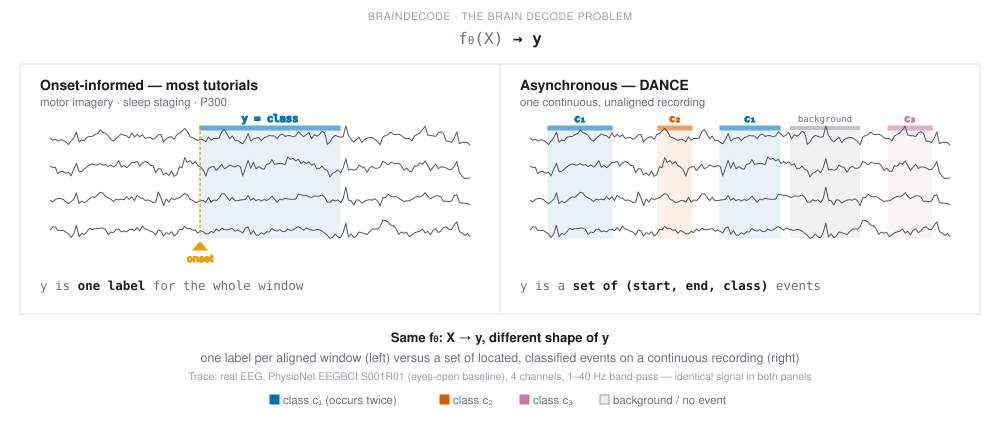

Note
Go to the end to download the full example code.
From window labels to events: asynchronous EEG decoding with DANCE#
braindecode defines brain decoding as \(f_\theta: X \to y\) (see the brain decode problem), and is explicit that the definition of \(y\) is broad. Most tutorials in this repository instantiate that mapping at a single point in the space it allows: \(X\) is a window already cut and aligned to a known onset (a motor-imagery cue, a sleep-epoch boundary, a P300 flash), and \(y\) is one categorical label for the whole window.
DANCE instantiates the same \(f_\theta: X \to y\) at a different point:
\(X\) is one long, unaligned recording, and \(y\) is the set of
(start, end, class) events \(f_\theta\) must locate and classify
itself. The definition did not change. Only the shape of \(y\) did.

This tutorial shows how to use the DANCE model
for event detection on continuous, real EEG recordings, with plain PyTorch (no
skorch, no Lightning). We reproduce, at reduced scale, the P300 setting from
the original paper [1], using the Brain Invaders BI2014a dataset [2] loaded
through MOABBDataset.
The pipeline is:
load a few subjects of continuous, real P300 EEG (BI2014a) with
MOABBDataset,preprocess with the exact minimal recipe from the paper: band-pass 0.1-100 Hz, resample to 128 Hz, per-channel robust scaling clamped to
[-16, 16],cut it into fixed-length windows with
create_fixed_length_windows()(W = 32s, matching the paper’s BI2014a configuration),turn each window’s stimulus annotations (
Target/NonTargetflashes) into a DANCE target dict (normalizedstart/endin[0, 1]plus a dense per-token class map),train
DANCEwithDanceLosson a cross-subject split (train on some subjects, evaluate on held-out ones, following the paper’s protocol), andevaluate with the event-level
f1_event()metric and a per-token macro F1 on the dense head (sklearn.metrics.f1_score()).
DANCE exposes two entry points: model.forward(x) returns the dense
per-token logits (B, num_latents, n_outputs), while model.detect(x)
returns the event set {class, start, end, dense}. Training and evaluation
below use detect (the loss needs the query set); a downstream user who only
wants a per-token prediction can call forward directly.
Note
DANCE follows a DETR-style class-0 = background / no-object convention:
real event classes are 1 .. n_outputs - 1 and class 0 is reserved
for “no event”. Here class 1 is a non-target flash and class 2 a
target flash; the target builder and both F1 metrics honour this
convention automatically.
Note
To keep the docs build fast, this tutorial uses only 3 subjects and 2 training epochs, far short of the paper’s full protocol (all subjects, 100 epochs with early stopping). Expect low F1 scores below; see the Conclusion for what changes at full scale.
# Authors: Bruno Aristimunha <b.aristimunha@gmail.com>
#
# License: MIT
random_state = 0
Loading and preprocessing the dataset#
Loading the raw recordings#
BI2014a is a Brain Invaders P300 (oddball) dataset: subjects watch a stream of flashes, most of which are “non-target” and a few “target”. We load 3 subjects: 2 for training, 1 held out for evaluation, following the paper’s cross-subject splitting protocol.
from braindecode.datasets import MOABBDataset
subject_ids = [1, 2, 3]
dataset = MOABBDataset(dataset_name="BI2014a", subject_ids=subject_ids)
This is nemar-py 0.3.3.
Preparing to download nm000244 from https://data.nemar.org/
Retrieving 5 of 779 manifest files (16 concurrent downloads).
Overall: 0%| | 0.00/26.2k [00:00<?, ?B/s]
Overall: 4%|▍ | 1.03k/26.2k [00:00<00:04, 5.19kB/s]
Overall: 36%|███▌ | 9.47k/26.2k [00:00<00:01, 12.4kB/s]
Overall: 50%|█████ | 13.1k/26.2k [00:00<00:00, 16.4kB/s]
Finished downloading nm000244 v1.0.3.
This is nemar-py 0.3.3.
Preparing to download nm000244 from https://data.nemar.org/
Retrieving 5 of 779 manifest files (16 concurrent downloads).
S3: 0%| | 0.00/36.7M [00:00<?, ?B/s]
S3: 3%|▎ | 1.00M/36.7M [00:00<00:32, 1.14MB/s]
S3: 5%|▌ | 2.00M/36.7M [00:01<00:16, 2.14MB/s]
S3: 8%|▊ | 3.00M/36.7M [00:01<00:10, 3.24MB/s]
S3: 14%|█▎ | 5.00M/36.7M [00:01<00:05, 5.94MB/s]
S3: 22%|██▏ | 8.00M/36.7M [00:01<00:02, 10.2MB/s]
S3: 35%|███▌ | 13.0M/36.7M [00:01<00:01, 17.8MB/s]
S3: 52%|█████▏ | 19.0M/36.7M [00:01<00:00, 26.8MB/s]
S3: 71%|███████ | 26.0M/36.7M [00:01<00:00, 34.9MB/s]
S3: 93%|█████████▎| 34.0M/36.7M [00:02<00:00, 41.8MB/s]
S3: 100%|██████████| 36.7M/36.7M [00:02<00:00, 19.1MB/s]
Finished downloading nm000244 v1.0.3.
This is nemar-py 0.3.3.
Preparing to download nm000244 from https://data.nemar.org/
Retrieving 5 of 779 manifest files (16 concurrent downloads).
S3: 0%| | 0.00/17.9M [00:00<?, ?B/s]
S3: 6%|▌ | 1.00M/17.9M [00:00<00:13, 1.33MB/s]
S3: 11%|█ | 2.00M/17.9M [00:00<00:06, 2.53MB/s]
S3: 22%|██▏ | 4.00M/17.9M [00:01<00:02, 5.39MB/s]
S3: 39%|███▉ | 7.00M/17.9M [00:01<00:01, 10.1MB/s]
S3: 67%|██████▋ | 12.0M/17.9M [00:01<00:00, 18.4MB/s]
S3: 100%|██████████| 17.9M/17.9M [00:01<00:00, 13.8MB/s]
Finished downloading nm000244 v1.0.3.
This is nemar-py 0.3.3.
Preparing to download nm000244 from https://data.nemar.org/
Retrieving 5 of 779 manifest files (16 concurrent downloads).
S3: 0%| | 0.00/55.2M [00:00<?, ?B/s]
S3: 2%|▏ | 1.00M/55.2M [00:00<00:41, 1.38MB/s]
S3: 4%|▎ | 2.00M/55.2M [00:00<00:20, 2.76MB/s]
S3: 7%|▋ | 4.00M/55.2M [00:00<00:09, 5.91MB/s]
S3: 13%|█▎ | 7.00M/55.2M [00:01<00:04, 10.8MB/s]
S3: 22%|██▏ | 12.0M/55.2M [00:01<00:02, 19.4MB/s]
S3: 31%|███ | 17.0M/55.2M [00:01<00:01, 22.8MB/s]
S3: 45%|████▌ | 25.0M/55.2M [00:01<00:00, 34.8MB/s]
S3: 60%|█████▉ | 33.0M/55.2M [00:01<00:00, 44.2MB/s]
S3: 71%|███████ | 39.0M/55.2M [00:01<00:00, 47.2MB/s]
S3: 83%|████████▎ | 46.0M/55.2M [00:01<00:00, 53.1MB/s]
S3: 94%|█████████▍| 52.0M/55.2M [00:02<00:00, 43.2MB/s]
S3: 100%|██████████| 55.2M/55.2M [00:02<00:00, 27.3MB/s]
Finished downloading nm000244 v1.0.3.
/opt/hostedtoolcache/Python/3.12.15/x64/lib/python3.12/site-packages/urllib3/connectionpool.py:2521: InsecureRequestWarning: Unverified HTTPS request is being made to host 'zenodo.org'. Adding certificate verification is strongly advised. See: https://urllib3future.readthedocs.io/en/latest/advanced-usage.html#tls-warnings
warnings.warn(
/opt/hostedtoolcache/Python/3.12.15/x64/lib/python3.12/site-packages/urllib3/connectionpool.py:2521: InsecureRequestWarning: Unverified HTTPS request is being made to host 'zenodo.org'. Adding certificate verification is strongly advised. See: https://urllib3future.readthedocs.io/en/latest/advanced-usage.html#tls-warnings
warnings.warn(
0%| | 0.00/60.6M [00:00<?, ?B/s]
0%| | 1.02k/60.6M [00:00<2:32:08, 6.63kB/s]
0%| | 33.8k/60.6M [00:00<07:50, 129kB/s]
0%| | 99.3k/60.6M [00:00<03:47, 265kB/s]
0%| | 132k/60.6M [00:00<04:00, 251kB/s]
0%|▏ | 198k/60.6M [00:00<03:21, 300kB/s]
0%|▏ | 263k/60.6M [00:00<03:00, 333kB/s]
1%|▏ | 329k/60.6M [00:01<02:48, 358kB/s]
1%|▏ | 365k/60.6M [00:01<02:49, 355kB/s]
1%|▎ | 427k/60.6M [00:01<02:49, 355kB/s]
1%|▎ | 463k/60.6M [00:01<03:03, 328kB/s]
1%|▎ | 560k/60.6M [00:01<02:48, 356kB/s]
1%|▍ | 626k/60.6M [00:01<02:39, 375kB/s]
1%|▍ | 664k/60.6M [00:02<02:42, 368kB/s]
1%|▍ | 726k/60.6M [00:02<02:21, 423kB/s]
1%|▍ | 770k/60.6M [00:02<02:24, 415kB/s]
1%|▌ | 892k/60.6M [00:02<01:49, 545kB/s]
2%|▋ | 1.03M/60.6M [00:02<01:26, 690kB/s]
2%|▊ | 1.24M/60.6M [00:02<00:56, 1.05MB/s]
2%|▊ | 1.36M/60.6M [00:02<00:57, 1.04MB/s]
2%|▉ | 1.48M/60.6M [00:02<00:56, 1.04MB/s]
3%|▉ | 1.59M/60.6M [00:03<01:09, 849kB/s]
3%|█ | 1.69M/60.6M [00:03<01:25, 692kB/s]
3%|█ | 1.76M/60.6M [00:03<01:26, 680kB/s]
3%|█▏ | 1.84M/60.6M [00:03<01:58, 496kB/s]
3%|█▏ | 1.90M/60.6M [00:03<02:13, 439kB/s]
3%|█▏ | 1.98M/60.6M [00:03<01:59, 492kB/s]
4%|█▎ | 2.14M/60.6M [00:04<01:27, 669kB/s]
4%|█▍ | 2.27M/60.6M [00:04<01:14, 778kB/s]
4%|█▍ | 2.36M/60.6M [00:04<01:16, 756kB/s]
4%|█▌ | 2.50M/60.6M [00:04<01:08, 850kB/s]
4%|█▌ | 2.59M/60.6M [00:04<01:25, 679kB/s]
4%|█▋ | 2.66M/60.6M [00:04<01:35, 605kB/s]
5%|█▋ | 2.73M/60.6M [00:05<02:27, 393kB/s]
5%|█▊ | 2.79M/60.6M [00:05<02:25, 397kB/s]
5%|█▊ | 2.84M/60.6M [00:05<02:34, 373kB/s]
5%|█▊ | 2.89M/60.6M [00:05<02:45, 349kB/s]
5%|█▊ | 2.93M/60.6M [00:05<02:53, 333kB/s]
5%|█▉ | 3.06M/60.6M [00:05<01:51, 517kB/s]
5%|█▉ | 3.15M/60.6M [00:06<01:35, 600kB/s]
5%|██ | 3.22M/60.6M [00:06<01:48, 527kB/s]
5%|██ | 3.29M/60.6M [00:06<01:57, 486kB/s]
6%|██▏ | 3.45M/60.6M [00:06<01:19, 718kB/s]
6%|██▎ | 3.61M/60.6M [00:06<01:22, 692kB/s]
6%|██▎ | 3.69M/60.6M [00:06<01:29, 635kB/s]
6%|██▎ | 3.76M/60.6M [00:07<01:46, 535kB/s]
6%|██▍ | 3.82M/60.6M [00:07<01:51, 511kB/s]
6%|██▍ | 3.91M/60.6M [00:07<01:37, 581kB/s]
7%|██▌ | 4.01M/60.6M [00:07<01:28, 636kB/s]
7%|██▌ | 4.07M/60.6M [00:07<01:30, 625kB/s]
7%|██▌ | 4.17M/60.6M [00:07<01:23, 677kB/s]
7%|██▋ | 4.24M/60.6M [00:07<01:31, 615kB/s]
7%|██▊ | 4.43M/60.6M [00:08<01:11, 789kB/s]
7%|██▊ | 4.53M/60.6M [00:08<01:28, 632kB/s]
8%|██▉ | 4.60M/60.6M [00:08<01:56, 479kB/s]
8%|██▉ | 4.65M/60.6M [00:08<02:09, 433kB/s]
8%|██▉ | 4.76M/60.6M [00:08<01:50, 506kB/s]
8%|███ | 4.86M/60.6M [00:09<01:37, 572kB/s]
8%|███▏ | 4.99M/60.6M [00:09<01:21, 683kB/s]
8%|███▏ | 5.09M/60.6M [00:09<01:20, 689kB/s]
9%|███▏ | 5.16M/60.6M [00:09<01:40, 550kB/s]
9%|███▎ | 5.23M/60.6M [00:09<01:43, 533kB/s]
9%|███▎ | 5.28M/60.6M [00:09<01:54, 484kB/s]
9%|███▎ | 5.33M/60.6M [00:09<01:53, 487kB/s]
9%|███▍ | 5.39M/60.6M [00:10<02:07, 432kB/s]
9%|███▍ | 5.45M/60.6M [00:10<01:57, 470kB/s]
9%|███▌ | 5.61M/60.6M [00:10<01:15, 729kB/s]
10%|███▋ | 5.78M/60.6M [00:10<01:03, 858kB/s]
10%|███▋ | 5.88M/60.6M [00:10<01:03, 868kB/s]
10%|███▋ | 5.98M/60.6M [00:10<01:04, 850kB/s]
10%|███▊ | 6.14M/60.6M [00:10<00:55, 987kB/s]
10%|███▉ | 6.24M/60.6M [00:11<01:15, 719kB/s]
10%|███▉ | 6.32M/60.6M [00:11<01:17, 697kB/s]
11%|████ | 6.43M/60.6M [00:11<01:18, 690kB/s]
11%|████ | 6.51M/60.6M [00:11<01:35, 564kB/s]
11%|████▏ | 6.60M/60.6M [00:11<01:29, 602kB/s]
11%|████▎ | 6.83M/60.6M [00:11<00:57, 932kB/s]
12%|████▎ | 7.02M/60.6M [00:11<00:49, 1.09MB/s]
12%|████▍ | 7.22M/60.6M [00:12<00:43, 1.24MB/s]
12%|████▌ | 7.42M/60.6M [00:12<00:38, 1.39MB/s]
12%|████▋ | 7.57M/60.6M [00:12<00:58, 905kB/s]
13%|████▊ | 7.68M/60.6M [00:12<00:57, 924kB/s]
13%|████▉ | 7.80M/60.6M [00:12<01:00, 868kB/s]
13%|████▉ | 7.90M/60.6M [00:12<01:14, 705kB/s]
13%|█████ | 7.98M/60.6M [00:13<01:17, 681kB/s]
13%|█████ | 8.14M/60.6M [00:13<01:04, 815kB/s]
14%|█████▏ | 8.23M/60.6M [00:13<01:04, 808kB/s]
14%|█████▏ | 8.32M/60.6M [00:13<01:22, 637kB/s]
14%|█████▎ | 8.42M/60.6M [00:13<01:15, 688kB/s]
14%|█████▎ | 8.50M/60.6M [00:13<01:35, 547kB/s]
14%|█████▍ | 8.60M/60.6M [00:14<01:31, 566kB/s]
14%|█████▍ | 8.70M/60.6M [00:14<01:48, 476kB/s]
14%|█████▌ | 8.77M/60.6M [00:14<02:08, 405kB/s]
15%|█████▌ | 8.83M/60.6M [00:14<02:04, 416kB/s]
15%|█████▌ | 8.93M/60.6M [00:14<01:44, 495kB/s]
15%|█████▋ | 9.06M/60.6M [00:14<01:18, 656kB/s]
15%|█████▋ | 9.14M/60.6M [00:15<01:16, 676kB/s]
15%|█████▊ | 9.29M/60.6M [00:15<01:03, 809kB/s]
16%|█████▉ | 9.43M/60.6M [00:15<00:59, 867kB/s]
16%|█████▉ | 9.52M/60.6M [00:15<00:58, 866kB/s]
16%|██████ | 9.61M/60.6M [00:15<01:02, 816kB/s]
16%|██████ | 9.72M/60.6M [00:15<00:59, 850kB/s]
16%|██████▏ | 9.81M/60.6M [00:15<01:20, 634kB/s]
16%|██████▏ | 9.88M/60.6M [00:16<01:27, 579kB/s]
16%|██████▎ | 9.97M/60.6M [00:16<01:20, 626kB/s]
17%|██████▎ | 10.0M/60.6M [00:16<01:38, 514kB/s]
17%|██████▎ | 10.1M/60.6M [00:16<01:25, 588kB/s]
17%|██████▍ | 10.2M/60.6M [00:16<01:20, 626kB/s]
17%|██████▍ | 10.3M/60.6M [00:16<01:15, 665kB/s]
17%|██████▌ | 10.4M/60.6M [00:16<01:15, 661kB/s]
17%|██████▌ | 10.5M/60.6M [00:17<01:21, 615kB/s]
17%|██████▋ | 10.6M/60.6M [00:17<01:26, 577kB/s]
18%|██████▋ | 10.6M/60.6M [00:17<01:52, 442kB/s]
18%|██████▋ | 10.7M/60.6M [00:17<01:51, 447kB/s]
18%|██████▊ | 10.8M/60.6M [00:17<01:43, 479kB/s]
18%|██████▊ | 10.9M/60.6M [00:17<01:18, 634kB/s]
18%|██████▉ | 11.0M/60.6M [00:18<01:13, 677kB/s]
18%|██████▉ | 11.1M/60.6M [00:18<01:14, 664kB/s]
18%|███████ | 11.2M/60.6M [00:18<01:06, 742kB/s]
19%|███████ | 11.3M/60.6M [00:18<01:05, 753kB/s]
19%|███████▏ | 11.4M/60.6M [00:18<01:07, 728kB/s]
19%|███████▏ | 11.4M/60.6M [00:18<01:26, 567kB/s]
19%|███████▎ | 11.6M/60.6M [00:18<01:07, 728kB/s]
19%|███████▎ | 11.7M/60.6M [00:19<01:16, 642kB/s]
19%|███████▎ | 11.7M/60.6M [00:19<01:22, 592kB/s]
20%|███████▍ | 11.8M/60.6M [00:19<01:49, 446kB/s]
20%|███████▍ | 11.9M/60.6M [00:19<01:43, 469kB/s]
20%|███████▌ | 12.0M/60.6M [00:19<01:18, 620kB/s]
20%|███████▋ | 12.2M/60.6M [00:19<00:53, 908kB/s]
20%|███████▋ | 12.3M/60.6M [00:19<00:55, 871kB/s]
21%|███████▋ | 12.5M/60.6M [00:20<00:42, 1.14MB/s]
21%|███████▉ | 12.7M/60.6M [00:20<00:55, 866kB/s]
21%|████████ | 12.8M/60.6M [00:20<01:03, 747kB/s]
21%|████████ | 12.9M/60.6M [00:20<01:00, 791kB/s]
21%|████████▏ | 13.0M/60.6M [00:20<01:27, 545kB/s]
22%|████████▏ | 13.0M/60.6M [00:21<01:37, 487kB/s]
22%|████████▏ | 13.1M/60.6M [00:21<01:24, 563kB/s]
22%|████████▎ | 13.2M/60.6M [00:21<01:14, 633kB/s]
22%|████████▎ | 13.3M/60.6M [00:21<01:11, 661kB/s]
22%|████████▍ | 13.5M/60.6M [00:21<00:53, 876kB/s]
23%|████████▌ | 13.6M/60.6M [00:21<01:08, 689kB/s]
23%|████████▌ | 13.7M/60.6M [00:22<01:11, 652kB/s]
23%|████████▋ | 13.8M/60.6M [00:22<01:11, 657kB/s]
23%|████████▋ | 13.9M/60.6M [00:22<01:17, 605kB/s]
23%|████████▋ | 13.9M/60.6M [00:22<01:49, 427kB/s]
23%|████████▊ | 14.0M/60.6M [00:22<01:42, 452kB/s]
23%|████████▊ | 14.1M/60.6M [00:22<01:30, 515kB/s]
23%|████████▉ | 14.2M/60.6M [00:22<01:12, 643kB/s]
24%|████████▉ | 14.3M/60.6M [00:23<01:12, 643kB/s]
24%|█████████ | 14.4M/60.6M [00:23<01:07, 684kB/s]
24%|█████████ | 14.5M/60.6M [00:23<01:15, 608kB/s]
24%|█████████ | 14.5M/60.6M [00:23<01:34, 489kB/s]
24%|█████████▏ | 14.6M/60.6M [00:23<01:32, 495kB/s]
24%|█████████▏ | 14.7M/60.6M [00:23<01:18, 582kB/s]
24%|█████████▎ | 14.8M/60.6M [00:23<01:20, 567kB/s]
25%|█████████▎ | 14.8M/60.6M [00:24<01:11, 640kB/s]
25%|█████████▍ | 14.9M/60.6M [00:24<01:05, 698kB/s]
25%|█████████▍ | 15.0M/60.6M [00:24<01:09, 655kB/s]
25%|█████████▍ | 15.1M/60.6M [00:24<01:09, 659kB/s]
25%|█████████▌ | 15.2M/60.6M [00:24<00:57, 785kB/s]
25%|█████████▋ | 15.4M/60.6M [00:24<00:53, 842kB/s]
26%|█████████▋ | 15.5M/60.6M [00:24<00:49, 905kB/s]
26%|█████████▊ | 15.6M/60.6M [00:24<00:53, 844kB/s]
26%|█████████▊ | 15.7M/60.6M [00:25<00:57, 777kB/s]
26%|█████████▉ | 15.8M/60.6M [00:25<01:00, 741kB/s]
26%|█████████▉ | 15.9M/60.6M [00:25<01:09, 639kB/s]
26%|██████████ | 15.9M/60.6M [00:25<01:12, 616kB/s]
26%|██████████ | 16.0M/60.6M [00:25<01:13, 607kB/s]
27%|██████████ | 16.1M/60.6M [00:25<01:06, 666kB/s]
27%|██████████▏ | 16.2M/60.6M [00:25<01:08, 649kB/s]
27%|██████████▏ | 16.3M/60.6M [00:25<00:56, 781kB/s]
27%|██████████▎ | 16.4M/60.6M [00:26<00:48, 908kB/s]
27%|██████████▎ | 16.5M/60.6M [00:26<00:52, 841kB/s]
27%|██████████▍ | 16.6M/60.6M [00:26<01:12, 605kB/s]
28%|██████████▍ | 16.7M/60.6M [00:26<01:11, 618kB/s]
28%|██████████▌ | 16.8M/60.6M [00:26<01:09, 630kB/s]
28%|██████████▌ | 16.8M/60.6M [00:27<01:56, 376kB/s]
28%|██████████▌ | 16.9M/60.6M [00:27<01:51, 392kB/s]
28%|██████████▌ | 16.9M/60.6M [00:27<01:46, 410kB/s]
28%|██████████▋ | 17.0M/60.6M [00:27<01:29, 486kB/s]
28%|██████████▋ | 17.1M/60.6M [00:27<01:14, 586kB/s]
28%|██████████▊ | 17.3M/60.6M [00:27<01:02, 694kB/s]
29%|██████████▉ | 17.4M/60.6M [00:27<00:54, 790kB/s]
29%|██████████▉ | 17.5M/60.6M [00:27<00:48, 896kB/s]
29%|███████████ | 17.7M/60.6M [00:28<00:49, 875kB/s]
29%|███████████▏ | 17.7M/60.6M [00:28<01:03, 672kB/s]
29%|███████████▏ | 17.8M/60.6M [00:28<01:12, 591kB/s]
30%|███████████▏ | 17.9M/60.6M [00:28<01:17, 548kB/s]
30%|███████████▎ | 18.0M/60.6M [00:28<01:09, 612kB/s]
30%|███████████▎ | 18.1M/60.6M [00:28<00:57, 740kB/s]
30%|███████████▍ | 18.2M/60.6M [00:29<00:55, 765kB/s]
30%|███████████▌ | 18.4M/60.6M [00:29<00:45, 919kB/s]
31%|███████████▋ | 18.5M/60.6M [00:29<00:42, 999kB/s]
31%|███████████▋ | 18.6M/60.6M [00:29<00:51, 820kB/s]
31%|███████████▊ | 18.7M/60.6M [00:29<00:57, 724kB/s]
31%|███████████▊ | 18.8M/60.6M [00:29<00:57, 729kB/s]
31%|███████████▊ | 18.9M/60.6M [00:29<00:57, 725kB/s]
31%|███████████▉ | 19.0M/60.6M [00:30<00:57, 726kB/s]
32%|███████████▉ | 19.1M/60.6M [00:30<00:53, 779kB/s]
32%|████████████ | 19.2M/60.6M [00:30<00:49, 830kB/s]
32%|███████████▉ | 19.5M/60.6M [00:30<00:32, 1.27MB/s]
32%|████████████ | 19.7M/60.6M [00:30<00:28, 1.44MB/s]
33%|████████████▏ | 19.9M/60.6M [00:30<00:25, 1.57MB/s]
33%|████████████▎ | 20.1M/60.6M [00:30<00:29, 1.35MB/s]
33%|████████████▎ | 20.2M/60.6M [00:30<00:35, 1.15MB/s]
34%|████████████▊ | 20.3M/60.6M [00:31<00:40, 998kB/s]
34%|████████████▍ | 20.5M/60.6M [00:31<00:39, 1.02MB/s]
34%|████████████▉ | 20.6M/60.6M [00:31<00:44, 899kB/s]
34%|████████████▉ | 20.7M/60.6M [00:31<00:44, 899kB/s]
34%|█████████████ | 20.8M/60.6M [00:31<00:41, 952kB/s]
34%|█████████████ | 20.9M/60.6M [00:31<00:41, 960kB/s]
35%|█████████████▏ | 21.0M/60.6M [00:31<00:46, 849kB/s]
35%|█████████████▏ | 21.1M/60.6M [00:31<00:45, 869kB/s]
35%|█████████████▎ | 21.2M/60.6M [00:32<00:49, 801kB/s]
35%|█████████████▎ | 21.3M/60.6M [00:32<01:09, 562kB/s]
35%|█████████████▍ | 21.4M/60.6M [00:32<00:54, 714kB/s]
36%|█████████████▌ | 21.5M/60.6M [00:32<01:01, 639kB/s]
36%|█████████████▌ | 21.7M/60.6M [00:32<00:49, 790kB/s]
36%|█████████████▋ | 21.8M/60.6M [00:32<00:42, 906kB/s]
36%|█████████████▊ | 21.9M/60.6M [00:33<00:41, 930kB/s]
37%|█████████████▉ | 22.1M/60.6M [00:33<00:42, 901kB/s]
37%|█████████████▉ | 22.2M/60.6M [00:33<00:48, 783kB/s]
37%|██████████████ | 22.3M/60.6M [00:33<01:00, 628kB/s]
37%|██████████████ | 22.5M/60.6M [00:33<00:47, 809kB/s]
37%|█████████████▊ | 22.7M/60.6M [00:33<00:33, 1.12MB/s]
38%|█████████████▉ | 22.9M/60.6M [00:34<00:30, 1.22MB/s]
38%|██████████████▏ | 23.2M/60.6M [00:34<00:26, 1.43MB/s]
39%|██████████████▎ | 23.4M/60.6M [00:34<00:25, 1.45MB/s]
39%|██████████████▍ | 23.5M/60.6M [00:34<00:31, 1.16MB/s]
39%|██████████████▍ | 23.7M/60.6M [00:34<00:31, 1.18MB/s]
39%|██████████████▌ | 23.8M/60.6M [00:34<00:33, 1.08MB/s]
39%|███████████████ | 23.9M/60.6M [00:34<00:42, 868kB/s]
40%|███████████████ | 24.0M/60.6M [00:35<01:00, 604kB/s]
40%|███████████████ | 24.1M/60.6M [00:35<01:00, 606kB/s]
40%|███████████████▏ | 24.2M/60.6M [00:35<01:02, 580kB/s]
40%|███████████████▏ | 24.2M/60.6M [00:35<01:08, 532kB/s]
40%|███████████████▏ | 24.3M/60.6M [00:35<01:17, 470kB/s]
40%|███████████████▎ | 24.3M/60.6M [00:36<01:18, 460kB/s]
40%|███████████████▎ | 24.4M/60.6M [00:36<01:31, 394kB/s]
40%|███████████████▎ | 24.5M/60.6M [00:36<01:22, 436kB/s]
41%|███████████████▍ | 24.6M/60.6M [00:36<01:11, 500kB/s]
41%|███████████████▍ | 24.7M/60.6M [00:36<01:10, 509kB/s]
41%|███████████████▌ | 24.7M/60.6M [00:36<01:15, 472kB/s]
41%|███████████████▌ | 24.8M/60.6M [00:36<01:19, 453kB/s]
41%|███████████████▌ | 24.9M/60.6M [00:37<01:20, 444kB/s]
41%|███████████████▋ | 24.9M/60.6M [00:37<01:17, 458kB/s]
41%|███████████████▋ | 25.0M/60.6M [00:37<01:18, 452kB/s]
41%|███████████████▊ | 25.1M/60.6M [00:37<00:56, 630kB/s]
42%|███████████████▊ | 25.2M/60.6M [00:37<01:02, 569kB/s]
42%|███████████████▊ | 25.3M/60.6M [00:37<01:01, 571kB/s]
42%|███████████████▉ | 25.4M/60.6M [00:38<01:03, 554kB/s]
42%|███████████████▉ | 25.4M/60.6M [00:38<01:06, 532kB/s]
42%|███████████████▉ | 25.5M/60.6M [00:38<01:07, 518kB/s]
42%|████████████████ | 25.5M/60.6M [00:38<01:10, 497kB/s]
42%|████████████████ | 25.6M/60.6M [00:38<00:58, 594kB/s]
43%|████████████████▏ | 25.8M/60.6M [00:38<00:48, 712kB/s]
43%|████████████████▏ | 25.9M/60.6M [00:38<00:46, 740kB/s]
43%|████████████████▎ | 26.1M/60.6M [00:39<00:40, 862kB/s]
43%|████████████████ | 26.3M/60.6M [00:39<00:32, 1.04MB/s]
44%|████████████████▏ | 26.4M/60.6M [00:39<00:31, 1.08MB/s]
44%|████████████████▏ | 26.5M/60.6M [00:39<00:34, 1.00MB/s]
44%|████████████████▎ | 26.7M/60.6M [00:39<00:30, 1.11MB/s]
44%|████████████████▊ | 26.8M/60.6M [00:39<00:43, 785kB/s]
44%|████████████████▊ | 26.9M/60.6M [00:39<00:41, 805kB/s]
45%|████████████████▉ | 27.0M/60.6M [00:40<00:42, 785kB/s]
45%|█████████████████ | 27.1M/60.6M [00:40<00:36, 907kB/s]
45%|█████████████████ | 27.2M/60.6M [00:40<00:38, 871kB/s]
45%|████████████████▋ | 27.4M/60.6M [00:40<00:31, 1.05MB/s]
45%|█████████████████▎ | 27.5M/60.6M [00:40<00:36, 907kB/s]
46%|█████████████████▎ | 27.7M/60.6M [00:40<00:34, 946kB/s]
46%|█████████████████▍ | 27.8M/60.6M [00:40<00:44, 733kB/s]
46%|█████████████████▌ | 27.9M/60.6M [00:41<00:59, 549kB/s]
46%|█████████████████▌ | 28.0M/60.6M [00:41<01:25, 380kB/s]
46%|█████████████████▌ | 28.0M/60.6M [00:41<01:17, 421kB/s]
46%|█████████████████▋ | 28.1M/60.6M [00:41<01:08, 476kB/s]
47%|█████████████████▋ | 28.3M/60.6M [00:42<01:04, 503kB/s]
47%|█████████████████▊ | 28.4M/60.6M [00:42<00:52, 609kB/s]
47%|█████████████████▊ | 28.5M/60.6M [00:42<00:49, 645kB/s]
47%|█████████████████▉ | 28.6M/60.6M [00:42<00:44, 713kB/s]
47%|█████████████████▉ | 28.7M/60.6M [00:42<00:43, 732kB/s]
48%|██████████████████ | 28.8M/60.6M [00:42<00:40, 792kB/s]
48%|██████████████████ | 28.9M/60.6M [00:42<00:42, 743kB/s]
48%|██████████████████▏ | 29.0M/60.6M [00:43<00:44, 705kB/s]
48%|██████████████████▎ | 29.2M/60.6M [00:43<00:32, 979kB/s]
48%|██████████████████▍ | 29.3M/60.6M [00:43<00:31, 981kB/s]
49%|██████████████████▍ | 29.4M/60.6M [00:43<00:32, 962kB/s]
49%|██████████████████▌ | 29.5M/60.6M [00:43<00:40, 775kB/s]
49%|██████████████████▌ | 29.6M/60.6M [00:43<00:48, 635kB/s]
49%|██████████████████▋ | 29.8M/60.6M [00:43<00:40, 757kB/s]
49%|██████████████████▋ | 29.8M/60.6M [00:44<00:46, 654kB/s]
49%|██████████████████▊ | 29.9M/60.6M [00:44<00:52, 589kB/s]
50%|██████████████████▊ | 30.0M/60.6M [00:44<00:51, 597kB/s]
50%|██████████████████▉ | 30.1M/60.6M [00:44<00:40, 752kB/s]
50%|██████████████████▉ | 30.2M/60.6M [00:44<00:38, 793kB/s]
50%|███████████████████ | 30.4M/60.6M [00:44<00:32, 920kB/s]
50%|███████████████████ | 30.4M/60.6M [00:44<00:33, 903kB/s]
50%|███████████████████▏ | 30.5M/60.6M [00:45<00:34, 882kB/s]
51%|███████████████████▏ | 30.6M/60.6M [00:45<00:34, 859kB/s]
51%|███████████████████▎ | 30.8M/60.6M [00:45<00:34, 862kB/s]
51%|███████████████████▎ | 30.9M/60.6M [00:45<00:45, 655kB/s]
51%|███████████████████▍ | 31.0M/60.6M [00:45<00:39, 744kB/s]
51%|███████████████████▌ | 31.1M/60.6M [00:45<00:39, 754kB/s]
51%|███████████████████▌ | 31.2M/60.6M [00:45<00:41, 715kB/s]
52%|███████████████████▋ | 31.3M/60.6M [00:46<00:40, 719kB/s]
52%|███████████████████▋ | 31.4M/60.6M [00:46<00:44, 650kB/s]
52%|███████████████████▋ | 31.5M/60.6M [00:46<00:47, 608kB/s]
52%|███████████████████▊ | 31.6M/60.6M [00:46<00:57, 500kB/s]
52%|███████████████████▊ | 31.6M/60.6M [00:46<01:11, 405kB/s]
52%|███████████████████▉ | 31.7M/60.6M [00:47<01:10, 408kB/s]
53%|███████████████████▉ | 31.8M/60.6M [00:47<00:51, 556kB/s]
53%|████████████████████ | 31.9M/60.6M [00:47<00:52, 546kB/s]
53%|████████████████████ | 32.0M/60.6M [00:47<00:51, 556kB/s]
53%|████████████████████ | 32.0M/60.6M [00:47<00:52, 539kB/s]
53%|████████████████████▏ | 32.1M/60.6M [00:47<00:48, 591kB/s]
53%|████████████████████▏ | 32.2M/60.6M [00:47<00:51, 552kB/s]
53%|████████████████████▏ | 32.3M/60.6M [00:47<00:50, 564kB/s]
54%|████████████████████▎ | 32.4M/60.6M [00:48<00:35, 783kB/s]
54%|████████████████████▍ | 32.5M/60.6M [00:48<00:36, 765kB/s]
54%|████████████████████▍ | 32.6M/60.6M [00:48<00:50, 559kB/s]
54%|████████████████████▍ | 32.6M/60.6M [00:48<00:52, 528kB/s]
54%|████████████████████▌ | 32.7M/60.6M [00:48<00:47, 583kB/s]
54%|████████████████████▌ | 32.9M/60.6M [00:48<00:39, 702kB/s]
54%|████████████████████▋ | 32.9M/60.6M [00:48<00:39, 697kB/s]
54%|████████████████████▋ | 33.0M/60.6M [00:49<00:44, 621kB/s]
55%|████████████████████▋ | 33.1M/60.6M [00:49<00:50, 539kB/s]
55%|████████████████████▊ | 33.1M/60.6M [00:49<01:04, 423kB/s]
55%|████████████████████▊ | 33.2M/60.6M [00:49<01:02, 438kB/s]
55%|████████████████████▉ | 33.3M/60.6M [00:49<00:57, 471kB/s]
55%|████████████████████▉ | 33.4M/60.6M [00:49<00:46, 578kB/s]
55%|█████████████████████ | 33.5M/60.6M [00:50<00:46, 577kB/s]
55%|█████████████████████ | 33.5M/60.6M [00:50<00:52, 514kB/s]
56%|█████████████████████ | 33.6M/60.6M [00:50<00:49, 544kB/s]
56%|█████████████████████▏ | 33.7M/60.6M [00:50<00:50, 534kB/s]
56%|█████████████████████▏ | 33.8M/60.6M [00:50<00:55, 480kB/s]
56%|█████████████████████▏ | 33.9M/60.6M [00:50<00:48, 552kB/s]
56%|█████████████████████▎ | 34.0M/60.6M [00:50<00:47, 557kB/s]
56%|█████████████████████▎ | 34.0M/60.6M [00:51<00:41, 638kB/s]
56%|█████████████████████▍ | 34.1M/60.6M [00:51<00:43, 611kB/s]
56%|█████████████████████▍ | 34.2M/60.6M [00:51<00:56, 466kB/s]
57%|█████████████████████▍ | 34.2M/60.6M [00:51<00:55, 477kB/s]
57%|█████████████████████▌ | 34.3M/60.6M [00:51<00:56, 463kB/s]
57%|█████████████████████▌ | 34.4M/60.6M [00:51<00:47, 548kB/s]
57%|█████████████████████▋ | 34.5M/60.6M [00:52<00:43, 602kB/s]
57%|█████████████████████▊ | 34.7M/60.6M [00:52<00:36, 702kB/s]
57%|█████████████████████▊ | 34.8M/60.6M [00:52<00:35, 725kB/s]
58%|█████████████████████▊ | 34.8M/60.6M [00:52<00:37, 684kB/s]
58%|█████████████████████▉ | 34.9M/60.6M [00:52<00:39, 657kB/s]
58%|█████████████████████▉ | 35.0M/60.6M [00:52<00:57, 446kB/s]
58%|██████████████████████ | 35.1M/60.6M [00:52<00:45, 560kB/s]
58%|██████████████████████ | 35.3M/60.6M [00:53<00:32, 779kB/s]
58%|██████████████████████▏ | 35.4M/60.6M [00:53<00:30, 813kB/s]
59%|██████████████████████▏ | 35.5M/60.6M [00:53<00:35, 715kB/s]
59%|██████████████████████▎ | 35.6M/60.6M [00:53<00:29, 850kB/s]
59%|██████████████████████▍ | 35.7M/60.6M [00:53<00:33, 739kB/s]
59%|██████████████████████▍ | 35.8M/60.6M [00:53<00:39, 635kB/s]
59%|██████████████████████▍ | 35.8M/60.6M [00:53<00:42, 581kB/s]
59%|██████████████████████▌ | 35.9M/60.6M [00:54<00:57, 429kB/s]
59%|██████████████████████▌ | 36.0M/60.6M [00:54<00:49, 492kB/s]
60%|██████████████████████▋ | 36.1M/60.6M [00:54<00:43, 567kB/s]
60%|██████████████████████▋ | 36.2M/60.6M [00:54<00:45, 536kB/s]
60%|██████████████████████▋ | 36.2M/60.6M [00:54<00:43, 557kB/s]
60%|██████████████████████▊ | 36.3M/60.6M [00:54<00:44, 540kB/s]
60%|██████████████████████▊ | 36.4M/60.6M [00:54<00:37, 648kB/s]
60%|██████████████████████▉ | 36.5M/60.6M [00:55<00:45, 527kB/s]
60%|██████████████████████▉ | 36.5M/60.6M [00:55<00:46, 517kB/s]
61%|██████████████████████▉ | 36.6M/60.6M [00:55<00:44, 537kB/s]
61%|███████████████████████ | 36.8M/60.6M [00:55<00:34, 694kB/s]
61%|███████████████████████▏ | 37.0M/60.6M [00:55<00:24, 952kB/s]
61%|███████████████████████▎ | 37.1M/60.6M [00:55<00:27, 861kB/s]
61%|███████████████████████▎ | 37.2M/60.6M [00:56<00:29, 796kB/s]
62%|███████████████████████▍ | 37.3M/60.6M [00:56<00:23, 975kB/s]
62%|███████████████████████▍ | 37.4M/60.6M [00:56<00:38, 601kB/s]
62%|███████████████████████▌ | 37.5M/60.6M [00:56<00:37, 623kB/s]
62%|███████████████████████▌ | 37.6M/60.6M [00:56<00:42, 542kB/s]
62%|███████████████████████▋ | 37.7M/60.6M [00:57<00:45, 502kB/s]
62%|███████████████████████▋ | 37.8M/60.6M [00:57<00:35, 633kB/s]
63%|███████████████████████▊ | 37.9M/60.6M [00:57<00:32, 702kB/s]
63%|███████████████████████▊ | 38.0M/60.6M [00:57<00:33, 682kB/s]
63%|███████████████████████▉ | 38.1M/60.6M [00:57<00:32, 693kB/s]
63%|███████████████████████▉ | 38.2M/60.6M [00:57<00:32, 697kB/s]
63%|████████████████████████ | 38.3M/60.6M [00:57<00:37, 602kB/s]
63%|████████████████████████ | 38.3M/60.6M [00:58<00:53, 414kB/s]
64%|████████████████████████▏ | 38.5M/60.6M [00:58<00:37, 586kB/s]
64%|████████████████████████▏ | 38.5M/60.6M [00:58<00:38, 573kB/s]
64%|████████████████████████▏ | 38.6M/60.6M [00:58<00:37, 590kB/s]
64%|████████████████████████▎ | 38.8M/60.6M [00:58<00:33, 651kB/s]
64%|████████████████████████▎ | 38.8M/60.6M [00:58<00:33, 657kB/s]
64%|████████████████████████▍ | 38.9M/60.6M [00:58<00:35, 618kB/s]
64%|████████████████████████▍ | 39.0M/60.6M [00:59<00:37, 573kB/s]
65%|████████████████████████▌ | 39.1M/60.6M [00:59<00:37, 567kB/s]
65%|████████████████████████▌ | 39.1M/60.6M [00:59<00:38, 554kB/s]
65%|████████████████████████▌ | 39.2M/60.6M [00:59<00:43, 492kB/s]
65%|████████████████████████▋ | 39.3M/60.6M [00:59<00:48, 440kB/s]
65%|████████████████████████▋ | 39.3M/60.6M [00:59<00:43, 489kB/s]
65%|████████████████████████▋ | 39.4M/60.6M [00:59<00:35, 591kB/s]
65%|████████████████████████▊ | 39.5M/60.6M [01:00<00:37, 568kB/s]
65%|████████████████████████▊ | 39.5M/60.6M [01:00<00:48, 434kB/s]
65%|████████████████████████▊ | 39.6M/60.6M [01:00<00:50, 418kB/s]
66%|████████████████████████▉ | 39.7M/60.6M [01:00<00:41, 503kB/s]
66%|████████████████████████▉ | 39.8M/60.6M [01:00<00:40, 515kB/s]
66%|█████████████████████████ | 39.8M/60.6M [01:00<00:39, 521kB/s]
66%|█████████████████████████ | 39.9M/60.6M [01:00<00:40, 515kB/s]
66%|█████████████████████████ | 40.0M/60.6M [01:01<00:37, 546kB/s]
66%|█████████████████████████▏ | 40.1M/60.6M [01:01<00:38, 534kB/s]
66%|█████████████████████████▏ | 40.1M/60.6M [01:01<00:43, 475kB/s]
66%|█████████████████████████▏ | 40.2M/60.6M [01:01<00:57, 355kB/s]
66%|█████████████████████████▎ | 40.3M/60.6M [01:01<00:41, 488kB/s]
67%|█████████████████████████▎ | 40.3M/60.6M [01:01<00:39, 506kB/s]
67%|█████████████████████████▎ | 40.4M/60.6M [01:01<00:38, 518kB/s]
67%|█████████████████████████▍ | 40.5M/60.6M [01:02<00:33, 593kB/s]
67%|█████████████████████████▌ | 40.7M/60.6M [01:02<00:21, 924kB/s]
67%|█████████████████████████▌ | 40.8M/60.6M [01:02<00:31, 624kB/s]
68%|█████████████████████████▋ | 41.0M/60.6M [01:02<00:26, 744kB/s]
68%|█████████████████████████▊ | 41.0M/60.6M [01:02<00:31, 619kB/s]
68%|█████████████████████████▊ | 41.1M/60.6M [01:03<00:37, 512kB/s]
68%|█████████████████████████▊ | 41.2M/60.6M [01:03<00:34, 564kB/s]
68%|█████████████████████████▉ | 41.3M/60.6M [01:03<00:32, 598kB/s]
68%|██████████████████████████ | 41.5M/60.6M [01:03<00:26, 719kB/s]
69%|██████████████████████████ | 41.6M/60.6M [01:03<00:25, 740kB/s]
69%|██████████████████████████▏ | 41.7M/60.6M [01:03<00:24, 772kB/s]
69%|██████████████████████████▏ | 41.7M/60.6M [01:03<00:24, 764kB/s]
69%|██████████████████████████▏ | 41.8M/60.6M [01:03<00:25, 722kB/s]
69%|██████████████████████████▎ | 41.9M/60.6M [01:04<00:26, 706kB/s]
69%|██████████████████████████▎ | 42.0M/60.6M [01:04<00:25, 737kB/s]
69%|██████████████████████████▍ | 42.1M/60.6M [01:04<00:36, 501kB/s]
70%|██████████████████████████▍ | 42.1M/60.6M [01:04<00:35, 513kB/s]
70%|██████████████████████████▌ | 42.3M/60.6M [01:04<00:31, 588kB/s]
70%|██████████████████████████▌ | 42.4M/60.6M [01:04<00:29, 621kB/s]
70%|██████████████████████████▋ | 42.4M/60.6M [01:05<00:28, 642kB/s]
70%|██████████████████████████▋ | 42.5M/60.6M [01:05<00:28, 638kB/s]
70%|██████████████████████████▊ | 42.7M/60.6M [01:05<00:21, 829kB/s]
71%|██████████████████████████▊ | 42.8M/60.6M [01:05<00:29, 600kB/s]
71%|██████████████████████████▉ | 42.9M/60.6M [01:05<00:22, 795kB/s]
71%|██████████████████████████▉ | 43.0M/60.6M [01:05<00:23, 744kB/s]
71%|███████████████████████████ | 43.1M/60.6M [01:05<00:23, 738kB/s]
71%|███████████████████████████ | 43.2M/60.6M [01:06<00:22, 784kB/s]
71%|███████████████████████████▏ | 43.3M/60.6M [01:06<00:34, 494kB/s]
72%|███████████████████████████▏ | 43.4M/60.6M [01:06<00:33, 515kB/s]
72%|███████████████████████████▏ | 43.4M/60.6M [01:06<00:31, 542kB/s]
72%|███████████████████████████▎ | 43.5M/60.6M [01:06<00:33, 517kB/s]
72%|███████████████████████████▍ | 43.6M/60.6M [01:06<00:23, 733kB/s]
72%|███████████████████████████▍ | 43.7M/60.6M [01:06<00:23, 722kB/s]
72%|███████████████████████████▍ | 43.8M/60.6M [01:07<00:25, 645kB/s]
72%|███████████████████████████▌ | 43.9M/60.6M [01:07<00:43, 379kB/s]
73%|███████████████████████████▋ | 44.1M/60.6M [01:07<00:29, 555kB/s]
73%|███████████████████████████▋ | 44.1M/60.6M [01:07<00:31, 525kB/s]
73%|███████████████████████████▊ | 44.3M/60.6M [01:08<00:23, 686kB/s]
74%|███████████████████████████▉ | 44.6M/60.6M [01:08<00:19, 828kB/s]
74%|████████████████████████████ | 44.6M/60.6M [01:08<00:21, 758kB/s]
74%|████████████████████████████ | 44.7M/60.6M [01:08<00:21, 734kB/s]
74%|████████████████████████████ | 44.8M/60.6M [01:08<00:20, 762kB/s]
74%|████████████████████████████▏ | 44.9M/60.6M [01:08<00:28, 552kB/s]
74%|████████████████████████████▏ | 45.0M/60.6M [01:09<00:29, 526kB/s]
74%|████████████████████████████▏ | 45.0M/60.6M [01:09<00:29, 522kB/s]
75%|████████████████████████████▎ | 45.1M/60.6M [01:09<00:23, 670kB/s]
75%|████████████████████████████▍ | 45.2M/60.6M [01:09<00:21, 718kB/s]
75%|████████████████████████████▍ | 45.3M/60.6M [01:09<00:23, 658kB/s]
75%|████████████████████████████▍ | 45.4M/60.6M [01:09<00:25, 593kB/s]
75%|████████████████████████████▌ | 45.5M/60.6M [01:09<00:26, 563kB/s]
75%|████████████████████████████▌ | 45.5M/60.6M [01:10<00:35, 420kB/s]
75%|████████████████████████████▌ | 45.6M/60.6M [01:10<00:37, 396kB/s]
75%|████████████████████████████▋ | 45.6M/60.6M [01:10<00:39, 379kB/s]
75%|████████████████████████████▋ | 45.7M/60.6M [01:10<00:37, 401kB/s]
76%|████████████████████████████▋ | 45.8M/60.6M [01:10<00:34, 428kB/s]
76%|████████████████████████████▊ | 45.9M/60.6M [01:10<00:27, 525kB/s]
76%|████████████████████████████▊ | 46.0M/60.6M [01:11<00:29, 487kB/s]
76%|████████████████████████████▉ | 46.0M/60.6M [01:11<00:27, 525kB/s]
76%|████████████████████████████▉ | 46.2M/60.6M [01:11<00:22, 650kB/s]
76%|█████████████████████████████ | 46.3M/60.6M [01:11<00:19, 723kB/s]
77%|█████████████████████████████ | 46.4M/60.6M [01:11<00:19, 712kB/s]
77%|█████████████████████████████▏ | 46.5M/60.6M [01:11<00:15, 930kB/s]
77%|█████████████████████████████▎ | 46.6M/60.6M [01:11<00:19, 731kB/s]
77%|█████████████████████████████▎ | 46.7M/60.6M [01:12<00:19, 719kB/s]
77%|█████████████████████████████▍ | 46.8M/60.6M [01:12<00:18, 739kB/s]
77%|█████████████████████████████▍ | 46.9M/60.6M [01:12<00:21, 622kB/s]
78%|█████████████████████████████▍ | 47.0M/60.6M [01:12<00:26, 522kB/s]
78%|█████████████████████████████▌ | 47.0M/60.6M [01:12<00:33, 399kB/s]
78%|█████████████████████████████▌ | 47.1M/60.6M [01:12<00:35, 383kB/s]
78%|█████████████████████████████▌ | 47.2M/60.6M [01:13<00:28, 468kB/s]
78%|█████████████████████████████▋ | 47.2M/60.6M [01:13<00:27, 478kB/s]
78%|█████████████████████████████▋ | 47.3M/60.6M [01:13<00:24, 544kB/s]
78%|█████████████████████████████▋ | 47.4M/60.6M [01:13<00:24, 536kB/s]
78%|█████████████████████████████▊ | 47.5M/60.6M [01:13<00:31, 412kB/s]
79%|█████████████████████████████▉ | 47.6M/60.6M [01:13<00:20, 645kB/s]
79%|█████████████████████████████▉ | 47.7M/60.6M [01:14<00:24, 523kB/s]
79%|█████████████████████████████▉ | 47.8M/60.6M [01:14<00:23, 534kB/s]
79%|██████████████████████████████ | 47.8M/60.6M [01:14<00:26, 475kB/s]
79%|██████████████████████████████ | 48.0M/60.6M [01:14<00:21, 597kB/s]
79%|██████████████████████████████▏ | 48.1M/60.6M [01:14<00:16, 738kB/s]
80%|██████████████████████████████▎ | 48.3M/60.6M [01:14<00:14, 823kB/s]
80%|██████████████████████████████▎ | 48.3M/60.6M [01:14<00:16, 757kB/s]
80%|██████████████████████████████▍ | 48.4M/60.6M [01:15<00:16, 718kB/s]
80%|██████████████████████████████▍ | 48.5M/60.6M [01:15<00:20, 580kB/s]
80%|██████████████████████████████▍ | 48.6M/60.6M [01:15<00:29, 411kB/s]
80%|██████████████████████████████▌ | 48.6M/60.6M [01:15<00:35, 341kB/s]
80%|██████████████████████████████▌ | 48.7M/60.6M [01:16<00:40, 298kB/s]
80%|██████████████████████████████▌ | 48.7M/60.6M [01:16<00:38, 305kB/s]
81%|██████████████████████████████▌ | 48.8M/60.6M [01:16<00:31, 372kB/s]
81%|██████████████████████████████▋ | 48.8M/60.6M [01:16<00:30, 388kB/s]
81%|██████████████████████████████▋ | 48.9M/60.6M [01:16<00:27, 430kB/s]
81%|██████████████████████████████▊ | 49.0M/60.6M [01:16<00:21, 546kB/s]
81%|██████████████████████████████▊ | 49.1M/60.6M [01:16<00:24, 476kB/s]
81%|██████████████████████████████▊ | 49.2M/60.6M [01:17<00:28, 407kB/s]
81%|██████████████████████████████▊ | 49.2M/60.6M [01:17<00:28, 406kB/s]
81%|██████████████████████████████▉ | 49.3M/60.6M [01:17<00:29, 380kB/s]
81%|██████████████████████████████▉ | 49.3M/60.6M [01:17<00:29, 385kB/s]
82%|██████████████████████████████▉ | 49.4M/60.6M [01:17<00:32, 348kB/s]
82%|███████████████████████████████ | 49.4M/60.6M [01:17<00:30, 365kB/s]
82%|███████████████████████████████ | 49.5M/60.6M [01:18<00:23, 468kB/s]
82%|███████████████████████████████▏ | 49.7M/60.6M [01:18<00:17, 630kB/s]
82%|███████████████████████████████▏ | 49.7M/60.6M [01:18<00:19, 556kB/s]
82%|███████████████████████████████▎ | 49.8M/60.6M [01:18<00:17, 605kB/s]
82%|███████████████████████████████▎ | 49.9M/60.6M [01:18<00:21, 493kB/s]
82%|███████████████████████████████▎ | 50.0M/60.6M [01:18<00:22, 481kB/s]
83%|███████████████████████████████▍ | 50.0M/60.6M [01:18<00:19, 531kB/s]
83%|███████████████████████████████▍ | 50.1M/60.6M [01:19<00:18, 564kB/s]
83%|███████████████████████████████▌ | 50.3M/60.6M [01:19<00:13, 776kB/s]
83%|███████████████████████████████▋ | 50.4M/60.6M [01:19<00:12, 789kB/s]
83%|███████████████████████████████▋ | 50.5M/60.6M [01:19<00:14, 676kB/s]
84%|███████████████████████████████▋ | 50.6M/60.6M [01:19<00:15, 630kB/s]
84%|███████████████████████████████▊ | 50.7M/60.6M [01:19<00:14, 661kB/s]
84%|███████████████████████████████▊ | 50.8M/60.6M [01:19<00:15, 633kB/s]
84%|███████████████████████████████▉ | 50.8M/60.6M [01:20<00:17, 564kB/s]
84%|███████████████████████████████▉ | 50.9M/60.6M [01:20<00:16, 597kB/s]
84%|███████████████████████████████▉ | 51.0M/60.6M [01:20<00:21, 452kB/s]
84%|████████████████████████████████ | 51.1M/60.6M [01:20<00:18, 522kB/s]
85%|████████████████████████████████▏ | 51.3M/60.6M [01:20<00:12, 749kB/s]
85%|████████████████████████████████▏ | 51.4M/60.6M [01:20<00:12, 751kB/s]
85%|████████████████████████████████▎ | 51.5M/60.6M [01:20<00:09, 919kB/s]
85%|████████████████████████████████▍ | 51.6M/60.6M [01:21<00:09, 957kB/s]
85%|████████████████████████████████▍ | 51.7M/60.6M [01:21<00:09, 962kB/s]
86%|███████████████████████████████▋ | 51.9M/60.6M [01:21<00:08, 1.01MB/s]
86%|████████████████████████████████▌ | 52.0M/60.6M [01:21<00:11, 764kB/s]
86%|████████████████████████████████▋ | 52.1M/60.6M [01:21<00:12, 688kB/s]
86%|████████████████████████████████▋ | 52.2M/60.6M [01:22<00:19, 430kB/s]
86%|████████████████████████████████▊ | 52.2M/60.6M [01:22<00:18, 460kB/s]
86%|████████████████████████████████▊ | 52.3M/60.6M [01:22<00:15, 545kB/s]
86%|████████████████████████████████▊ | 52.4M/60.6M [01:22<00:14, 548kB/s]
87%|████████████████████████████████▉ | 52.5M/60.6M [01:22<00:15, 523kB/s]
87%|████████████████████████████████▉ | 52.5M/60.6M [01:22<00:17, 462kB/s]
87%|████████████████████████████████▉ | 52.6M/60.6M [01:22<00:16, 472kB/s]
87%|█████████████████████████████████ | 52.7M/60.6M [01:23<00:13, 596kB/s]
87%|█████████████████████████████████ | 52.7M/60.6M [01:23<00:12, 602kB/s]
87%|█████████████████████████████████▏ | 52.8M/60.6M [01:23<00:27, 287kB/s]
87%|█████████████████████████████████▏ | 52.9M/60.6M [01:23<00:22, 344kB/s]
87%|█████████████████████████████████▏ | 53.0M/60.6M [01:23<00:19, 385kB/s]
88%|█████████████████████████████████▎ | 53.1M/60.6M [01:24<00:17, 425kB/s]
88%|█████████████████████████████████▎ | 53.1M/60.6M [01:24<00:15, 465kB/s]
88%|█████████████████████████████████▍ | 53.2M/60.6M [01:24<00:16, 450kB/s]
88%|█████████████████████████████████▍ | 53.3M/60.6M [01:24<00:14, 494kB/s]
88%|█████████████████████████████████▍ | 53.4M/60.6M [01:24<00:13, 515kB/s]
88%|█████████████████████████████████▌ | 53.4M/60.6M [01:24<00:13, 545kB/s]
88%|█████████████████████████████████▌ | 53.5M/60.6M [01:24<00:12, 578kB/s]
88%|█████████████████████████████████▋ | 53.6M/60.6M [01:25<00:12, 572kB/s]
89%|█████████████████████████████████▋ | 53.7M/60.6M [01:25<00:13, 515kB/s]
89%|█████████████████████████████████▋ | 53.7M/60.6M [01:25<00:14, 460kB/s]
89%|█████████████████████████████████▋ | 53.8M/60.6M [01:25<00:18, 370kB/s]
89%|█████████████████████████████████▊ | 53.9M/60.6M [01:25<00:15, 434kB/s]
89%|█████████████████████████████████▊ | 54.0M/60.6M [01:25<00:12, 538kB/s]
89%|█████████████████████████████████▉ | 54.0M/60.6M [01:25<00:11, 576kB/s]
89%|██████████████████████████████████ | 54.2M/60.6M [01:26<00:07, 828kB/s]
90%|██████████████████████████████████ | 54.3M/60.6M [01:26<00:08, 753kB/s]
90%|██████████████████████████████████ | 54.4M/60.6M [01:26<00:11, 539kB/s]
90%|██████████████████████████████████▏ | 54.5M/60.6M [01:26<00:11, 555kB/s]
90%|██████████████████████████████████▏ | 54.5M/60.6M [01:26<00:10, 565kB/s]
90%|██████████████████████████████████▏ | 54.6M/60.6M [01:27<00:15, 395kB/s]
90%|██████████████████████████████████▎ | 54.7M/60.6M [01:27<00:12, 486kB/s]
90%|██████████████████████████████████▎ | 54.8M/60.6M [01:27<00:10, 550kB/s]
91%|██████████████████████████████████▍ | 54.9M/60.6M [01:27<00:09, 618kB/s]
91%|██████████████████████████████████▍ | 55.0M/60.6M [01:27<00:08, 696kB/s]
91%|██████████████████████████████████▌ | 55.1M/60.6M [01:27<00:08, 652kB/s]
91%|██████████████████████████████████▌ | 55.2M/60.6M [01:28<00:11, 462kB/s]
91%|██████████████████████████████████▋ | 55.3M/60.6M [01:28<00:09, 538kB/s]
91%|██████████████████████████████████▋ | 55.3M/60.6M [01:28<00:12, 411kB/s]
91%|██████████████████████████████████▊ | 55.4M/60.6M [01:28<00:13, 385kB/s]
92%|██████████████████████████████████▊ | 55.5M/60.6M [01:28<00:10, 491kB/s]
92%|██████████████████████████████████▉ | 55.6M/60.6M [01:28<00:08, 573kB/s]
92%|██████████████████████████████████▉ | 55.7M/60.6M [01:28<00:07, 637kB/s]
92%|██████████████████████████████████▉ | 55.8M/60.6M [01:29<00:07, 636kB/s]
92%|███████████████████████████████████ | 55.9M/60.6M [01:29<00:06, 760kB/s]
92%|███████████████████████████████████ | 56.0M/60.6M [01:29<00:06, 729kB/s]
93%|███████████████████████████████████▏ | 56.1M/60.6M [01:29<00:06, 749kB/s]
93%|███████████████████████████████████▏ | 56.2M/60.6M [01:29<00:06, 710kB/s]
93%|███████████████████████████████████▎ | 56.3M/60.6M [01:29<00:06, 687kB/s]
93%|███████████████████████████████████▎ | 56.4M/60.6M [01:30<00:08, 507kB/s]
93%|███████████████████████████████████▍ | 56.4M/60.6M [01:30<00:10, 408kB/s]
93%|███████████████████████████████████▍ | 56.5M/60.6M [01:30<00:10, 391kB/s]
93%|███████████████████████████████████▍ | 56.6M/60.6M [01:30<00:09, 419kB/s]
94%|███████████████████████████████████▌ | 56.7M/60.6M [01:30<00:07, 487kB/s]
94%|███████████████████████████████████▋ | 56.8M/60.6M [01:31<00:07, 476kB/s]
94%|███████████████████████████████████▋ | 56.9M/60.6M [01:31<00:06, 535kB/s]
94%|███████████████████████████████████▊ | 57.0M/60.6M [01:31<00:06, 553kB/s]
94%|███████████████████████████████████▊ | 57.1M/60.6M [01:31<00:06, 544kB/s]
94%|███████████████████████████████████▊ | 57.2M/60.6M [01:31<00:05, 595kB/s]
95%|███████████████████████████████████▉ | 57.3M/60.6M [01:31<00:06, 542kB/s]
95%|███████████████████████████████████▉ | 57.3M/60.6M [01:32<00:06, 495kB/s]
95%|████████████████████████████████████ | 57.4M/60.6M [01:32<00:07, 417kB/s]
95%|████████████████████████████████████ | 57.5M/60.6M [01:32<00:06, 495kB/s]
95%|████████████████████████████████████ | 57.6M/60.6M [01:32<00:05, 589kB/s]
95%|████████████████████████████████████▏ | 57.7M/60.6M [01:32<00:05, 542kB/s]
95%|████████████████████████████████████▏ | 57.8M/60.6M [01:32<00:04, 565kB/s]
96%|████████████████████████████████████▎ | 57.9M/60.6M [01:32<00:04, 593kB/s]
96%|████████████████████████████████████▍ | 58.0M/60.6M [01:33<00:03, 716kB/s]
96%|████████████████████████████████████▍ | 58.1M/60.6M [01:33<00:04, 511kB/s]
96%|████████████████████████████████████▌ | 58.2M/60.6M [01:33<00:04, 536kB/s]
96%|████████████████████████████████████▌ | 58.3M/60.6M [01:33<00:04, 518kB/s]
96%|████████████████████████████████████▌ | 58.3M/60.6M [01:33<00:04, 486kB/s]
96%|████████████████████████████████████▋ | 58.4M/60.6M [01:34<00:05, 370kB/s]
96%|████████████████████████████████████▋ | 58.4M/60.6M [01:34<00:05, 369kB/s]
97%|████████████████████████████████████▋ | 58.5M/60.6M [01:34<00:05, 371kB/s]
97%|████████████████████████████████████▋ | 58.6M/60.6M [01:34<00:04, 428kB/s]
97%|████████████████████████████████████▊ | 58.6M/60.6M [01:34<00:03, 535kB/s]
97%|████████████████████████████████████▊ | 58.7M/60.6M [01:34<00:04, 453kB/s]
97%|████████████████████████████████████▉ | 58.8M/60.6M [01:35<00:04, 365kB/s]
97%|████████████████████████████████████▉ | 58.8M/60.6M [01:35<00:04, 398kB/s]
97%|████████████████████████████████████▉ | 58.9M/60.6M [01:35<00:03, 456kB/s]
97%|█████████████████████████████████████ | 59.0M/60.6M [01:35<00:03, 457kB/s]
98%|█████████████████████████████████████ | 59.1M/60.6M [01:35<00:03, 437kB/s]
98%|█████████████████████████████████████ | 59.1M/60.6M [01:35<00:03, 406kB/s]
98%|█████████████████████████████████████ | 59.2M/60.6M [01:36<00:04, 349kB/s]
98%|█████████████████████████████████████▏| 59.2M/60.6M [01:36<00:04, 333kB/s]
98%|█████████████████████████████████████▏| 59.3M/60.6M [01:36<00:03, 385kB/s]
98%|█████████████████████████████████████▏| 59.3M/60.6M [01:36<00:03, 381kB/s]
98%|█████████████████████████████████████▎| 59.4M/60.6M [01:36<00:03, 355kB/s]
98%|█████████████████████████████████████▎| 59.4M/60.6M [01:36<00:03, 373kB/s]
98%|█████████████████████████████████████▎| 59.5M/60.6M [01:36<00:02, 404kB/s]
98%|█████████████████████████████████████▎| 59.5M/60.6M [01:37<00:02, 392kB/s]
98%|█████████████████████████████████████▍| 59.6M/60.6M [01:37<00:02, 382kB/s]
99%|█████████████████████████████████████▍| 59.7M/60.6M [01:37<00:01, 550kB/s]
99%|█████████████████████████████████████▍| 59.8M/60.6M [01:37<00:01, 561kB/s]
99%|█████████████████████████████████████▌| 59.8M/60.6M [01:37<00:01, 516kB/s]
99%|█████████████████████████████████████▌| 59.9M/60.6M [01:37<00:01, 364kB/s]
99%|█████████████████████████████████████▌| 60.0M/60.6M [01:37<00:01, 406kB/s]
99%|█████████████████████████████████████▋| 60.0M/60.6M [01:38<00:01, 412kB/s]
99%|█████████████████████████████████████▋| 60.1M/60.6M [01:38<00:01, 417kB/s]
99%|█████████████████████████████████████▋| 60.1M/60.6M [01:38<00:01, 416kB/s]
99%|█████████████████████████████████████▋| 60.2M/60.6M [01:38<00:01, 325kB/s]
99%|█████████████████████████████████████▊| 60.3M/60.6M [01:38<00:00, 398kB/s]
100%|█████████████████████████████████████▊| 60.3M/60.6M [01:38<00:00, 393kB/s]
100%|█████████████████████████████████████▊| 60.3M/60.6M [01:38<00:00, 368kB/s]
100%|█████████████████████████████████████▉| 60.4M/60.6M [01:39<00:00, 359kB/s]
100%|█████████████████████████████████████▉| 60.4M/60.6M [01:39<00:00, 334kB/s]
100%|█████████████████████████████████████▉| 60.5M/60.6M [01:39<00:00, 258kB/s]
100%|█████████████████████████████████████▉| 60.5M/60.6M [01:39<00:00, 243kB/s]
100%|█████████████████████████████████████▉| 60.6M/60.6M [01:39<00:00, 248kB/s]
60.6MB [01:39, 351kB/s]
60.7MB [01:40, 298kB/s]
60.7MB [01:40, 357kB/s]
0%| | 0.00/60.6M [00:00<?, ?B/s]
100%|██████████████████████████████████████| 60.6M/60.6M [00:00<00:00, 368GB/s]
/opt/hostedtoolcache/Python/3.12.15/x64/lib/python3.12/site-packages/moabb/datasets/braininvaders.py:215: FutureWarning: Montage name 'standard_1020' is deprecated and will be removed in MNE 1.14. Use 'colin27_1020' instead.
info.set_montage(make_standard_montage("standard_1020"), on_missing="ignore")
/opt/hostedtoolcache/Python/3.12.15/x64/lib/python3.12/site-packages/urllib3/connectionpool.py:2521: InsecureRequestWarning: Unverified HTTPS request is being made to host 'zenodo.org'. Adding certificate verification is strongly advised. See: https://urllib3future.readthedocs.io/en/latest/advanced-usage.html#tls-warnings
warnings.warn(
/opt/hostedtoolcache/Python/3.12.15/x64/lib/python3.12/site-packages/urllib3/connectionpool.py:2521: InsecureRequestWarning: Unverified HTTPS request is being made to host 'zenodo.org'. Adding certificate verification is strongly advised. See: https://urllib3future.readthedocs.io/en/latest/advanced-usage.html#tls-warnings
warnings.warn(
0%| | 0.00/29.6M [00:00<?, ?B/s]
0%| | 11.3k/29.6M [00:00<07:07, 69.1kB/s]
0%| | 27.6k/29.6M [00:00<05:22, 91.5kB/s]
0%| | 89.1k/29.6M [00:00<02:54, 169kB/s]
1%|▏ | 158k/29.6M [00:00<01:54, 257kB/s]
1%|▎ | 214k/29.6M [00:00<01:42, 286kB/s]
1%|▎ | 282k/29.6M [00:01<01:27, 333kB/s]
1%|▌ | 380k/29.6M [00:01<01:08, 428kB/s]
2%|▋ | 480k/29.6M [00:01<01:03, 458kB/s]
2%|▊ | 595k/29.6M [00:01<00:53, 542kB/s]
2%|▉ | 695k/29.6M [00:01<00:50, 569kB/s]
3%|█ | 792k/29.6M [00:01<00:50, 567kB/s]
3%|█▏ | 892k/29.6M [00:02<00:50, 574kB/s]
3%|█▎ | 957k/29.6M [00:02<00:54, 521kB/s]
4%|█▎ | 1.06M/29.6M [00:02<00:51, 550kB/s]
4%|█▍ | 1.16M/29.6M [00:02<00:53, 531kB/s]
4%|█▌ | 1.26M/29.6M [00:02<00:50, 558kB/s]
5%|█▊ | 1.37M/29.6M [00:02<00:47, 594kB/s]
5%|█▉ | 1.47M/29.6M [00:03<00:48, 578kB/s]
5%|██ | 1.57M/29.6M [00:03<00:48, 572kB/s]
6%|██▏ | 1.67M/29.6M [00:03<00:51, 546kB/s]
6%|██▎ | 1.77M/29.6M [00:03<00:50, 556kB/s]
6%|██▍ | 1.87M/29.6M [00:03<00:48, 570kB/s]
7%|██▌ | 1.97M/29.6M [00:03<00:48, 567kB/s]
7%|██▌ | 2.03M/29.6M [00:04<00:52, 526kB/s]
7%|██▋ | 2.13M/29.6M [00:04<00:49, 553kB/s]
7%|██▊ | 2.21M/29.6M [00:04<00:50, 539kB/s]
8%|██▉ | 2.31M/29.6M [00:04<00:50, 541kB/s]
8%|███ | 2.41M/29.6M [00:04<00:49, 546kB/s]
8%|███▏ | 2.49M/29.6M [00:04<00:49, 544kB/s]
9%|███▎ | 2.62M/29.6M [00:05<00:43, 613kB/s]
9%|███▍ | 2.72M/29.6M [00:05<00:44, 605kB/s]
10%|███▌ | 2.82M/29.6M [00:05<00:46, 579kB/s]
10%|███▋ | 2.92M/29.6M [00:05<00:47, 556kB/s]
10%|███▊ | 2.98M/29.6M [00:05<00:53, 494kB/s]
10%|███▉ | 3.08M/29.6M [00:06<00:50, 521kB/s]
11%|████ | 3.18M/29.6M [00:06<00:48, 545kB/s]
11%|████▏ | 3.25M/29.6M [00:06<00:56, 470kB/s]
11%|████▎ | 3.34M/29.6M [00:06<00:53, 489kB/s]
12%|████▍ | 3.44M/29.6M [00:06<00:50, 520kB/s]
12%|████▋ | 3.61M/29.6M [00:06<00:41, 633kB/s]
13%|████▊ | 3.70M/29.6M [00:07<00:41, 627kB/s]
13%|████▉ | 3.85M/29.6M [00:07<00:35, 719kB/s]
13%|█████ | 3.98M/29.6M [00:07<00:33, 757kB/s]
14%|█████▏ | 4.08M/29.6M [00:07<00:35, 725kB/s]
14%|█████▎ | 4.18M/29.6M [00:07<00:36, 696kB/s]
15%|█████▌ | 4.30M/29.6M [00:07<00:36, 697kB/s]
15%|█████▋ | 4.40M/29.6M [00:08<00:37, 669kB/s]
15%|█████▊ | 4.50M/29.6M [00:08<00:38, 653kB/s]
16%|█████▉ | 4.59M/29.6M [00:08<00:38, 649kB/s]
16%|█████▉ | 4.66M/29.6M [00:08<00:42, 582kB/s]
16%|██████ | 4.76M/29.6M [00:08<00:41, 592kB/s]
16%|██████▏ | 4.86M/29.6M [00:08<00:41, 600kB/s]
17%|██████▎ | 4.92M/29.6M [00:09<00:45, 548kB/s]
17%|██████▍ | 5.02M/29.6M [00:09<00:44, 555kB/s]
17%|██████▌ | 5.12M/29.6M [00:09<00:42, 571kB/s]
18%|██████▋ | 5.18M/29.6M [00:09<00:46, 524kB/s]
18%|██████▊ | 5.28M/29.6M [00:09<00:44, 541kB/s]
18%|██████▉ | 5.38M/29.6M [00:09<00:43, 559kB/s]
18%|██████▉ | 5.45M/29.6M [00:09<00:46, 523kB/s]
19%|███████ | 5.53M/29.6M [00:10<00:46, 519kB/s]
19%|███████▏ | 5.63M/29.6M [00:10<00:43, 555kB/s]
19%|███████▎ | 5.73M/29.6M [00:10<00:41, 572kB/s]
20%|███████▍ | 5.82M/29.6M [00:10<00:45, 525kB/s]
20%|███████▌ | 5.92M/29.6M [00:10<00:42, 559kB/s]
20%|███████▊ | 6.04M/29.6M [00:10<00:38, 611kB/s]
21%|███████▉ | 6.14M/29.6M [00:11<00:38, 607kB/s]
21%|████████ | 6.24M/29.6M [00:11<00:41, 567kB/s]
21%|████████▏ | 6.34M/29.6M [00:11<00:40, 576kB/s]
22%|████████▎ | 6.44M/29.6M [00:11<00:39, 586kB/s]
22%|████████▍ | 6.53M/29.6M [00:11<00:42, 537kB/s]
22%|████████▌ | 6.63M/29.6M [00:12<00:42, 544kB/s]
23%|████████▌ | 6.70M/29.6M [00:12<00:44, 514kB/s]
23%|████████▊ | 6.86M/29.6M [00:12<00:34, 668kB/s]
24%|█████████ | 7.01M/29.6M [00:12<00:30, 748kB/s]
24%|█████████▏ | 7.11M/29.6M [00:12<00:31, 719kB/s]
24%|█████████▎ | 7.21M/29.6M [00:12<00:32, 696kB/s]
25%|█████████▍ | 7.32M/29.6M [00:13<00:34, 653kB/s]
25%|█████████▋ | 7.52M/29.6M [00:13<00:24, 886kB/s]
26%|█████████▋ | 7.70M/29.6M [00:13<00:20, 1.08MB/s]
27%|█████████▊ | 7.87M/29.6M [00:13<00:18, 1.20MB/s]
27%|██████████ | 8.01M/29.6M [00:13<00:19, 1.13MB/s]
28%|██████████▏ | 8.18M/29.6M [00:13<00:19, 1.10MB/s]
28%|██████████▌ | 8.41M/29.6M [00:13<00:17, 1.23MB/s]
29%|██████████▊ | 8.67M/29.6M [00:13<00:15, 1.37MB/s]
30%|███████████▏ | 8.92M/29.6M [00:14<00:15, 1.32MB/s]
31%|███████████▌ | 9.22M/29.6M [00:14<00:13, 1.55MB/s]
32%|███████████▋ | 9.38M/29.6M [00:14<00:15, 1.32MB/s]
33%|████████████▎ | 9.88M/29.6M [00:14<00:10, 1.81MB/s]
34%|████████████▋ | 10.1M/29.6M [00:14<00:11, 1.63MB/s]
35%|████████████▉ | 10.4M/29.6M [00:15<00:12, 1.59MB/s]
36%|█████████████▎ | 10.6M/29.6M [00:15<00:11, 1.66MB/s]
36%|█████████████▍ | 10.8M/29.6M [00:15<00:15, 1.20MB/s]
37%|█████████████▋ | 10.9M/29.6M [00:15<00:16, 1.13MB/s]
38%|█████████████▉ | 11.2M/29.6M [00:15<00:13, 1.39MB/s]
39%|██████████████▍ | 11.5M/29.6M [00:15<00:12, 1.48MB/s]
40%|██████████████▊ | 11.8M/29.6M [00:16<00:11, 1.54MB/s]
41%|███████████████ | 12.1M/29.6M [00:16<00:11, 1.50MB/s]
42%|███████████████▍ | 12.3M/29.6M [00:16<00:12, 1.43MB/s]
42%|███████████████▋ | 12.5M/29.6M [00:16<00:12, 1.35MB/s]
43%|███████████████▉ | 12.8M/29.6M [00:16<00:12, 1.39MB/s]
44%|████████████████▎ | 13.0M/29.6M [00:16<00:11, 1.40MB/s]
45%|████████████████▌ | 13.3M/29.6M [00:17<00:11, 1.43MB/s]
46%|████████████████▉ | 13.5M/29.6M [00:17<00:11, 1.43MB/s]
46%|█████████████████▏ | 13.7M/29.6M [00:17<00:10, 1.45MB/s]
47%|█████████████████▌ | 14.0M/29.6M [00:17<00:10, 1.54MB/s]
48%|█████████████████▊ | 14.2M/29.6M [00:17<00:10, 1.53MB/s]
49%|██████████████████ | 14.5M/29.6M [00:17<00:09, 1.66MB/s]
49%|██████████████████▎ | 14.6M/29.6M [00:17<00:09, 1.65MB/s]
50%|██████████████████▌ | 14.8M/29.6M [00:18<00:09, 1.58MB/s]
51%|██████████████████▋ | 15.0M/29.6M [00:18<00:10, 1.41MB/s]
51%|███████████████████ | 15.2M/29.6M [00:18<00:09, 1.46MB/s]
52%|███████████████████▏ | 15.4M/29.6M [00:18<00:09, 1.56MB/s]
53%|███████████████████▍ | 15.5M/29.6M [00:18<00:09, 1.52MB/s]
53%|███████████████████▋ | 15.7M/29.6M [00:18<00:10, 1.28MB/s]
54%|███████████████████▊ | 15.8M/29.6M [00:18<00:10, 1.27MB/s]
54%|███████████████████▉ | 16.0M/29.6M [00:19<00:11, 1.22MB/s]
55%|████████████████████▏ | 16.2M/29.6M [00:19<00:11, 1.12MB/s]
55%|████████████████████▍ | 16.3M/29.6M [00:19<00:11, 1.11MB/s]
56%|████████████████████▌ | 16.5M/29.6M [00:19<00:10, 1.20MB/s]
56%|████████████████████▊ | 16.7M/29.6M [00:19<00:10, 1.23MB/s]
57%|█████████████████████▏ | 16.9M/29.6M [00:19<00:09, 1.38MB/s]
58%|█████████████████████▍ | 17.1M/29.6M [00:19<00:08, 1.44MB/s]
59%|█████████████████████▋ | 17.3M/29.6M [00:20<00:08, 1.43MB/s]
60%|██████████████████████ | 17.6M/29.6M [00:20<00:08, 1.38MB/s]
60%|██████████████████████▎ | 17.9M/29.6M [00:20<00:08, 1.45MB/s]
61%|██████████████████████▋ | 18.1M/29.6M [00:20<00:07, 1.46MB/s]
62%|██████████████████████▊ | 18.3M/29.6M [00:20<00:08, 1.38MB/s]
62%|███████████████████████ | 18.4M/29.6M [00:20<00:07, 1.43MB/s]
63%|███████████████████████▎ | 18.6M/29.6M [00:20<00:07, 1.43MB/s]
63%|███████████████████████▍ | 18.7M/29.6M [00:21<00:08, 1.30MB/s]
64%|███████████████████████▋ | 19.0M/29.6M [00:21<00:08, 1.32MB/s]
65%|████████████████████████ | 19.2M/29.6M [00:21<00:07, 1.43MB/s]
66%|████████████████████████▍ | 19.5M/29.6M [00:21<00:06, 1.55MB/s]
67%|████████████████████████▋ | 19.7M/29.6M [00:21<00:06, 1.62MB/s]
67%|████████████████████████▊ | 19.9M/29.6M [00:21<00:06, 1.59MB/s]
68%|█████████████████████████ | 20.0M/29.6M [00:21<00:06, 1.48MB/s]
68%|█████████████████████████▎ | 20.2M/29.6M [00:22<00:06, 1.42MB/s]
69%|█████████████████████████▍ | 20.3M/29.6M [00:22<00:07, 1.32MB/s]
69%|█████████████████████████▌ | 20.5M/29.6M [00:22<00:07, 1.24MB/s]
70%|██████████████████████████ | 20.8M/29.6M [00:22<00:05, 1.69MB/s]
71%|██████████████████████████▎ | 21.0M/29.6M [00:22<00:05, 1.52MB/s]
72%|██████████████████████████▍ | 21.2M/29.6M [00:22<00:06, 1.38MB/s]
72%|██████████████████████████▊ | 21.4M/29.6M [00:22<00:05, 1.42MB/s]
73%|███████████████████████████ | 21.7M/29.6M [00:23<00:05, 1.43MB/s]
74%|███████████████████████████▍ | 21.9M/29.6M [00:23<00:05, 1.51MB/s]
75%|███████████████████████████▋ | 22.1M/29.6M [00:23<00:05, 1.46MB/s]
75%|███████████████████████████▉ | 22.3M/29.6M [00:23<00:05, 1.38MB/s]
76%|████████████████████████████ | 22.4M/29.6M [00:23<00:05, 1.32MB/s]
76%|████████████████████████████▏ | 22.6M/29.6M [00:23<00:05, 1.20MB/s]
77%|████████████████████████████▌ | 22.8M/29.6M [00:23<00:04, 1.37MB/s]
78%|████████████████████████████▉ | 23.1M/29.6M [00:24<00:04, 1.44MB/s]
79%|█████████████████████████████▏ | 23.3M/29.6M [00:24<00:04, 1.49MB/s]
80%|█████████████████████████████▌ | 23.6M/29.6M [00:24<00:03, 1.51MB/s]
81%|█████████████████████████████▊ | 23.9M/29.6M [00:24<00:03, 1.49MB/s]
81%|██████████████████████████████ | 24.0M/29.6M [00:24<00:04, 1.30MB/s]
82%|██████████████████████████████▏ | 24.1M/29.6M [00:24<00:04, 1.17MB/s]
82%|██████████████████████████████▍ | 24.3M/29.6M [00:25<00:04, 1.20MB/s]
83%|██████████████████████████████▌ | 24.4M/29.6M [00:25<00:04, 1.20MB/s]
83%|██████████████████████████████▊ | 24.6M/29.6M [00:25<00:04, 1.14MB/s]
84%|███████████████████████████████ | 24.9M/29.6M [00:25<00:03, 1.20MB/s]
85%|███████████████████████████████▍ | 25.1M/29.6M [00:25<00:03, 1.30MB/s]
86%|███████████████████████████████▋ | 25.4M/29.6M [00:25<00:03, 1.34MB/s]
87%|████████████████████████████████ | 25.6M/29.6M [00:26<00:02, 1.36MB/s]
87%|████████████████████████████████▎ | 25.8M/29.6M [00:26<00:02, 1.45MB/s]
88%|████████████████████████████████▍ | 26.0M/29.6M [00:26<00:02, 1.45MB/s]
89%|████████████████████████████████▊ | 26.2M/29.6M [00:26<00:02, 1.48MB/s]
90%|█████████████████████████████████ | 26.5M/29.6M [00:26<00:02, 1.52MB/s]
90%|█████████████████████████████████▍ | 26.7M/29.6M [00:26<00:01, 1.55MB/s]
91%|█████████████████████████████████▋ | 27.0M/29.6M [00:26<00:01, 1.54MB/s]
92%|██████████████████████████████████ | 27.2M/29.6M [00:27<00:01, 1.51MB/s]
93%|██████████████████████████████████▍ | 27.5M/29.6M [00:27<00:01, 1.43MB/s]
94%|██████████████████████████████████▋ | 27.7M/29.6M [00:27<00:01, 1.40MB/s]
95%|███████████████████████████████████ | 28.0M/29.6M [00:27<00:01, 1.41MB/s]
95%|███████████████████████████████████▏ | 28.2M/29.6M [00:27<00:01, 1.15MB/s]
96%|███████████████████████████████████▌ | 28.4M/29.6M [00:28<00:00, 1.21MB/s]
96%|███████████████████████████████████▋ | 28.5M/29.6M [00:28<00:00, 1.16MB/s]
97%|████████████████████████████████████ | 28.8M/29.6M [00:28<00:00, 1.26MB/s]
98%|████████████████████████████████████▎| 29.0M/29.6M [00:28<00:00, 1.28MB/s]
98%|█████████████████████████████████████▍| 29.1M/29.6M [00:28<00:00, 920kB/s]
99%|█████████████████████████████████████▌| 29.2M/29.6M [00:29<00:00, 795kB/s]
99%|█████████████████████████████████████▋| 29.3M/29.6M [00:29<00:00, 801kB/s]
100%|█████████████████████████████████████▉| 29.5M/29.6M [00:29<00:00, 947kB/s]
29.6MB [00:29, 909kB/s]
0%| | 0.00/29.6M [00:00<?, ?B/s]
100%|██████████████████████████████████████| 29.6M/29.6M [00:00<00:00, 218GB/s]
/opt/hostedtoolcache/Python/3.12.15/x64/lib/python3.12/site-packages/moabb/datasets/braininvaders.py:215: FutureWarning: Montage name 'standard_1020' is deprecated and will be removed in MNE 1.14. Use 'colin27_1020' instead.
info.set_montage(make_standard_montage("standard_1020"), on_missing="ignore")
/opt/hostedtoolcache/Python/3.12.15/x64/lib/python3.12/site-packages/urllib3/connectionpool.py:2521: InsecureRequestWarning: Unverified HTTPS request is being made to host 'zenodo.org'. Adding certificate verification is strongly advised. See: https://urllib3future.readthedocs.io/en/latest/advanced-usage.html#tls-warnings
warnings.warn(
/opt/hostedtoolcache/Python/3.12.15/x64/lib/python3.12/site-packages/urllib3/connectionpool.py:2521: InsecureRequestWarning: Unverified HTTPS request is being made to host 'zenodo.org'. Adding certificate verification is strongly advised. See: https://urllib3future.readthedocs.io/en/latest/advanced-usage.html#tls-warnings
warnings.warn(
0%| | 0.00/87.9M [00:00<?, ?B/s]
0%| | 7.17k/87.9M [00:00<38:15, 38.3kB/s]
0%| | 44.0k/87.9M [00:00<09:51, 148kB/s]
0%| | 89.1k/87.9M [00:00<06:51, 213kB/s]
0%| | 193k/87.9M [00:00<03:42, 394kB/s]
0%| | 248k/87.9M [00:00<03:48, 384kB/s]
0%|▏ | 365k/87.9M [00:00<02:50, 514kB/s]
1%|▏ | 456k/87.9M [00:01<02:41, 543kB/s]
1%|▎ | 653k/87.9M [00:01<01:51, 784kB/s]
1%|▍ | 851k/87.9M [00:01<01:31, 949kB/s]
1%|▍ | 1.06M/87.9M [00:01<01:19, 1.09MB/s]
2%|▌ | 1.44M/87.9M [00:01<00:56, 1.52MB/s]
2%|▋ | 1.69M/87.9M [00:01<00:55, 1.56MB/s]
3%|█ | 2.40M/87.9M [00:01<00:34, 2.50MB/s]
4%|█▎ | 3.10M/87.9M [00:02<00:26, 3.16MB/s]
5%|█▊ | 4.18M/87.9M [00:02<00:19, 4.36MB/s]
6%|██▏ | 5.20M/87.9M [00:02<00:16, 5.07MB/s]
7%|██▋ | 6.48M/87.9M [00:02<00:13, 6.10MB/s]
9%|███▏ | 7.58M/87.9M [00:02<00:12, 6.45MB/s]
10%|███▊ | 9.10M/87.9M [00:02<00:10, 7.54MB/s]
12%|████▍ | 10.5M/87.9M [00:03<00:09, 8.14MB/s]
15%|█████▍ | 13.0M/87.9M [00:03<00:07, 10.5MB/s]
16%|██████ | 14.5M/87.9M [00:03<00:07, 10.4MB/s]
20%|███████▌ | 18.0M/87.9M [00:03<00:04, 14.2MB/s]
25%|█████████ | 21.7M/87.9M [00:03<00:03, 17.2MB/s]
29%|██████████▊ | 25.8M/87.9M [00:03<00:03, 20.1MB/s]
34%|████████████▌ | 29.9M/87.9M [00:03<00:02, 22.1MB/s]
39%|██████████████▎ | 34.0M/87.9M [00:04<00:02, 23.4MB/s]
43%|████████████████ | 38.1M/87.9M [00:04<00:02, 24.3MB/s]
48%|█████████████████▊ | 42.3M/87.9M [00:04<00:01, 25.1MB/s]
53%|███████████████████▌ | 46.4M/87.9M [00:04<00:01, 25.5MB/s]
57%|█████████████████████▎ | 50.5M/87.9M [00:04<00:01, 25.9MB/s]
62%|██████████████████████▉ | 54.6M/87.9M [00:04<00:01, 26.1MB/s]
67%|████████████████████████▋ | 58.7M/87.9M [00:05<00:01, 26.3MB/s]
72%|██████████████████████████▍ | 62.9M/87.9M [00:05<00:00, 26.4MB/s]
76%|████████████████████████████▏ | 67.0M/87.9M [00:05<00:00, 26.5MB/s]
81%|█████████████████████████████▉ | 71.1M/87.9M [00:05<00:00, 26.6MB/s]
86%|███████████████████████████████▋ | 75.2M/87.9M [00:05<00:00, 26.6MB/s]
90%|█████████████████████████████████▍ | 79.4M/87.9M [00:05<00:00, 26.5MB/s]
95%|███████████████████████████████████▏ | 83.5M/87.9M [00:05<00:00, 26.6MB/s]
100%|████████████████████████████████████▊| 87.6M/87.9M [00:06<00:00, 26.6MB/s]
0%| | 0.00/87.9M [00:00<?, ?B/s]
100%|██████████████████████████████████████| 87.9M/87.9M [00:00<00:00, 693GB/s]
/opt/hostedtoolcache/Python/3.12.15/x64/lib/python3.12/site-packages/moabb/datasets/braininvaders.py:215: FutureWarning: Montage name 'standard_1020' is deprecated and will be removed in MNE 1.14. Use 'colin27_1020' instead.
info.set_montage(make_standard_montage("standard_1020"), on_missing="ignore")
Preprocessing#
We reproduce the exact minimal preprocessing recipe of the DANCE paper
[1]: band-pass filter between 0.1 and 100 Hz, resample to a common
128 Hz, then a per-channel, per-session robust scaling (subtract the
median, divide by the interquartile range) clamped to [-16, 16]. We
reach for sklearn.preprocessing.robust_scale() rather than
hand-rolling the median/IQR arithmetic. axis=1 scales each channel
(row) using its own median and interquartile range computed across time
(columns), which is exactly the per-channel recipe above.
import numpy as np
from sklearn.preprocessing import robust_scale
from braindecode.preprocessing import Preprocessor, preprocess
def robust_scale_clamp(data):
"""Per-channel median/IQR scaling, clamped to [-16, 16] (DANCE recipe)."""
return np.clip(robust_scale(data, axis=1), -16, 16)
SFREQ = 128.0
preprocessors = [
Preprocessor("pick_types", eeg=True, stim=False),
Preprocessor("filter", l_freq=0.1, h_freq=100.0),
Preprocessor("resample", sfreq=SFREQ),
Preprocessor(robust_scale_clamp, apply_on_array=True),
]
preprocess(dataset, preprocessors)
/home/runner/work/braindecode/braindecode/braindecode/preprocessing/preprocess.py:78: UserWarning: apply_on_array can only be True if fn is a callable function. Automatically correcting to apply_on_array=False.
warn(
NOTE: pick_types() is a legacy function. New code should use inst.pick(...).
Filtering raw data in 1 contiguous segment
Setting up band-pass filter from 0.1 - 1e+02 Hz
FIR filter parameters
---------------------
Designing a one-pass, zero-phase, non-causal bandpass filter:
- Windowed time-domain design (firwin) method
- Hamming window with 0.0194 passband ripple and 53 dB stopband attenuation
- Lower passband edge: 0.10
- Lower transition bandwidth: 0.10 Hz (-6 dB cutoff frequency: 0.05 Hz)
- Upper passband edge: 100.00 Hz
- Upper transition bandwidth: 25.00 Hz (-6 dB cutoff frequency: 112.50 Hz)
- Filter length: 16897 samples (33.002 s)
NOTE: pick_types() is a legacy function. New code should use inst.pick(...).
Filtering raw data in 1 contiguous segment
Setting up band-pass filter from 0.1 - 1e+02 Hz
FIR filter parameters
---------------------
Designing a one-pass, zero-phase, non-causal bandpass filter:
- Windowed time-domain design (firwin) method
- Hamming window with 0.0194 passband ripple and 53 dB stopband attenuation
- Lower passband edge: 0.10
- Lower transition bandwidth: 0.10 Hz (-6 dB cutoff frequency: 0.05 Hz)
- Upper passband edge: 100.00 Hz
- Upper transition bandwidth: 25.00 Hz (-6 dB cutoff frequency: 112.50 Hz)
- Filter length: 16897 samples (33.002 s)
NOTE: pick_types() is a legacy function. New code should use inst.pick(...).
Filtering raw data in 1 contiguous segment
Setting up band-pass filter from 0.1 - 1e+02 Hz
FIR filter parameters
---------------------
Designing a one-pass, zero-phase, non-causal bandpass filter:
- Windowed time-domain design (firwin) method
- Hamming window with 0.0194 passband ripple and 53 dB stopband attenuation
- Lower passband edge: 0.10
- Lower transition bandwidth: 0.10 Hz (-6 dB cutoff frequency: 0.05 Hz)
- Upper passband edge: 100.00 Hz
- Upper transition bandwidth: 25.00 Hz (-6 dB cutoff frequency: 112.50 Hz)
- Filter length: 16897 samples (33.002 s)
Cut fixed-length windows and read the flash events#
DANCE consumes long, fixed-length windows rather than per-trial epochs, so
we use create_fixed_length_windows()
instead of create_windows_from_events().
We use W = 32 s and up to 150 events per window, matching the paper’s
BI2014a configuration (mean 45.8 events/window in the full dataset).
from braindecode.preprocessing import create_fixed_length_windows
WINDOW_S, N_CLASSES, NUM_LATENTS, MAX_EVENTS = 32.0, 3, 256, 150
WINDOW_SAMPLES = int(WINDOW_S * SFREQ)
windows_ds = create_fixed_length_windows(
dataset,
window_size_samples=WINDOW_SAMPLES,
window_stride_samples=WINDOW_SAMPLES,
drop_last_window=True,
preload=True,
use_mne_epochs=False, # guarantees EEGWindowsDataset -> (X, y, crop_inds)
)
def bi_annotations_to_events(raw):
"""Read ``(start_s, end_s, class_int)`` flash events from a BI* raw.
Class ``1`` = non-target flash, class ``2`` = target flash (class ``0``
is reserved for background/no-event, per the CLASS-0 CONTRACT).
"""
label_to_class = {"NonTarget": 1, "Target": 2}
events = []
for ann in raw.annotations:
cls = label_to_class.get(str(ann["description"]))
if cls is None:
continue
events.append((float(ann["onset"]), float(ann["onset"] + ann["duration"]), cls))
return events
/home/runner/work/braindecode/braindecode/examples/applied_examples/plot_dance_event_detection.py:166: DeprecationWarning: `drop_last_window` is deprecated and will be removed in version 2.0. Use `on_last_window='drop'` if True or `on_last_window='overlap'` if False. See https://github.com/braindecode/braindecode/pull/1058 for feedback.
windows_ds = create_fixed_length_windows(
Map each window’s annotations to DANCE targets#
This is the code that builds the \(y\) from the right-hand panel of the figure above. For one window \(X\), the paper [1] defines the target as a set of events
where \(b_i = (t_{\mathrm{start}}, t_{\mathrm{end}}) \in [0, 1]^2\) are the event’s boundaries normalized to the window duration (exactly the colored spans in the figure), and \(c_i \in \{0, \dots, K\}\) is its class. \(c_i = 0\) is the shared background/no-object class (the unlabeled gray span in the figure); real classes are \(1, \dots, K\) (here \(K = 2\): non-target and target flashes).
Two consequences follow, and both matter for dance_target_builder
below. Padding is indistinguishable from background:
DanceLoss’s matcher expects a fixed-size set
of max_events slots per window, so any slot with no real event defaults
to \(c_i = 0\), the same value that also denotes “no object”. There is
only one id for both, by design, and it never collides because a real
annotation is never given class 0. The dense head also needs a
per-token version of the same set: DANCE trains a per-timestep classifier
over num_latents latent tokens, so we rasterize each event’s
\([t_{\mathrm{start}}, t_{\mathrm{end}})\) span onto that token grid,
and every idle token defaults to the same background class 0.
This matches braindecode’s own upstream reference: the
dance/example/data.py MOABB bridge in facebookresearch/dance uses class 0 for
padding/background, 1 for non-target, and 2 for target on this
exact dataset, with events zero-padded to max_events = 150.
import torch
def dance_target_builder(
annotations, window_onset, window_duration, max_events, num_latents
):
"""Build one window's DANCE target: the event set y and its dense grid."""
start = torch.zeros(max_events)
end = torch.zeros(max_events)
cls = torch.zeros(max_events, dtype=torch.long) # cls[i] = 0 -> background/padding
w0, wd = window_onset, window_duration
kept = 0
for s, e, c in annotations:
# clip the annotation to the window and normalize to [0, 1]
s_c, e_c = max(s, w0), min(e, w0 + wd)
if e_c <= s_c or int(c) == 0 or kept >= max_events:
continue # outside the window, background, or out of query slots
start[kept] = (s_c - w0) / wd
end[kept] = (e_c - w0) / wd
cls[kept] = int(c)
kept += 1
# rasterize the kept events onto the num_latents-token grid: dense[t] is
# the class of whichever event (if any) covers token t
dense = torch.zeros(num_latents, dtype=torch.long)
s_tok = (start * num_latents).clamp(0, num_latents).long()
e_tok = (end * num_latents).clamp(0, num_latents).long()
for i in range(kept):
a, b = int(s_tok[i]), int(e_tok[i])
if a < b:
dense[a:b] = int(cls[i])
return {"start": start, "end": end, "class": cls, "dense": dense}
def dance_collate(batch):
"""Stack ``[(eeg, target_dict), ...]`` into the batched dict schema
:class:`~braindecode.training.DanceLoss` expects.
"""
eeg = torch.stack([b[0] for b in batch])
out = {"eeg": eeg}
for key in ("start", "end", "class", "dense"):
out[key] = torch.stack([b[1][key] for b in batch])
return out
raw_events = {
ds.description["subject"]: bi_annotations_to_events(ds.raw)
for ds in windows_ds.datasets
}
metadata = windows_ds.get_metadata()
samples, sample_subjects = [], []
for i in range(len(windows_ds)):
x, _, crop_inds = windows_ds[i]
eeg = torch.as_tensor(np.asarray(x), dtype=torch.float32)
subject = int(metadata.iloc[i]["subject"])
window_onset = float(crop_inds[1]) / SFREQ # i_start_in_trial / sfreq
target = dance_target_builder(
raw_events[subject],
window_onset=window_onset,
window_duration=WINDOW_S,
max_events=MAX_EVENTS,
num_latents=NUM_LATENTS,
)
samples.append((eeg, target))
sample_subjects.append(subject)
Splitting into train and test sets (cross-subject)#
We hold out the last subject entirely for evaluation, mirroring the paper’s cross-subject splitting protocol (train and test subjects never overlap).
from torch.utils.data import DataLoader
sample_subjects = np.asarray(sample_subjects)
test_subject = subject_ids[-1]
train_idx = np.flatnonzero(sample_subjects != test_subject)
test_idx = np.flatnonzero(sample_subjects == test_subject)
train_samples = [samples[i] for i in train_idx]
test_samples = [samples[i] for i in test_idx]
print(f"{len(train_samples)} train windows, {len(test_samples)} test windows")
train_loader = DataLoader(
train_samples,
batch_size=len(train_samples),
shuffle=True,
collate_fn=dance_collate,
)
test_loader = DataLoader(
test_samples,
batch_size=len(test_samples),
collate_fn=dance_collate,
)
37 train windows, 35 test windows
Create the model and the criterion#
from braindecode.models import DANCE
from braindecode.training import DanceLoss, f1_event
from braindecode.util import set_random_seeds
cuda = torch.cuda.is_available()
device = "cuda" if cuda else "cpu"
set_random_seeds(seed=random_state, cuda=cuda)
chs_info = windows_ds.datasets[0].raw.info["chs"]
model = DANCE(
n_outputs=N_CLASSES,
n_chans=len(chs_info),
chs_info=chs_info,
n_times=WINDOW_SAMPLES,
sfreq=SFREQ,
input_window_seconds=WINDOW_S,
).to(device)
criterion = DanceLoss(num_latents=NUM_LATENTS)
optimizer = torch.optim.Adam(model.parameters(), lr=5e-4)
Train the model#
detect() returns the query set + dense map that DanceLoss
needs; forward() alone would only give the dense per-token logits.
Warning
Kept at 2 epochs and 3 subjects so the docs build stays fast. This is not a converged model: the paper trains on the full dataset (71 subjects) for up to 100 epochs with early stopping. See the Conclusion.
n_epochs = 2
model.train()
for epoch in range(n_epochs):
epoch_loss = 0.0
for batch in train_loader:
batch = {k: v.to(device) for k, v in batch.items()}
optimizer.zero_grad()
out = model.detect(batch["eeg"])
loss, details = criterion(out, batch, duration=WINDOW_S)
loss.backward()
optimizer.step()
epoch_loss += float(loss)
print(f"Epoch {epoch + 1}/{n_epochs}: loss={epoch_loss / len(train_loader):.3f}")
/home/runner/work/braindecode/braindecode/braindecode/training/losses.py:233: UserWarning: Converting a tensor with requires_grad=True to a scalar may lead to unexpected behavior.
Consider using tensor.detach() first. (Triggered internally at /__w/pytorch/pytorch/torch/csrc/autograd/generated/python_variable_methods.cpp:820.)
s = float(preds["start"][bi, qi])
Epoch 1/2: loss=11.305
Epoch 2/2: loss=9.443
Evaluate on the held-out subject#
f1_event() scores the decoded event set (IoU >
0.5 + class match); the per-token macro F1 scores the dense head against
the dense target with sklearn.metrics.f1_score().
def detections_to_events(detections, duration):
"""Decode a DANCE ``detect()`` output into per-window event tuples.
Each query becomes ``(start_s, end_s, class, confidence)`` in seconds
within the window; queries whose argmax class is ``0``
(background/no-object) are dropped, following the CLASS-0 CONTRACT.
"""
probs = torch.softmax(detections["class"], dim=-1) # (B, Q, K+1)
confidence, label = probs.max(dim=-1) # (B, Q), one softmax call for the batch
start = detections["start"] * duration
end = detections["end"] * duration
events = []
for bi in range(label.shape[0]):
keep = label[bi] != 0
events.append(
list(
zip(
start[bi, keep].tolist(),
end[bi, keep].tolist(),
label[bi, keep].tolist(),
confidence[bi, keep].tolist(),
)
)
)
return events
from sklearn.metrics import f1_score
model.eval()
ev_f1s = []
dense_preds, dense_targets = [], []
with torch.no_grad():
for batch in test_loader:
batch = {k: v.to(device) for k, v in batch.items()}
out = model.detect(batch["eeg"])
pred_events = detections_to_events(out, duration=WINDOW_S)
for bi in range(batch["eeg"].shape[0]):
# ground-truth events of this window, in seconds within the window
gt = [
(float(s) * WINDOW_S, float(e) * WINDOW_S, int(c))
for s, e, c in zip(
batch["start"][bi], batch["end"][bi], batch["class"][bi]
)
if int(c) != 0
]
preds = [(s, e, c) for (s, e, c, _conf) in pred_events[bi]]
ev_f1s.append(f1_event(preds, gt, iou_threshold=0.5))
# dense head (B, T, n_outputs) vs dense target (B, T), one token per prediction
dense_preds.append(out["dense"].argmax(-1).reshape(-1).cpu())
dense_targets.append(batch["dense"].reshape(-1).cpu())
dense_preds = torch.cat(dense_preds).numpy()
dense_targets = torch.cat(dense_targets).numpy()
sample_f1 = f1_score(
dense_targets, dense_preds, labels=list(range(N_CLASSES)), average="macro"
)
print(
f"Held-out subject {test_subject}: "
f"F1-event={np.mean(ev_f1s):.3f} F1-sample={sample_f1:.3f}"
)
Held-out subject 3: F1-event=0.014 F1-sample=0.246
Predicting with the official pretrained checkpoint#
Note
braindecode has not yet published an official pretrained checkpoint for DANCE on the Hugging Face Hub, unlike the sleep-staging tutorials. The cell below uses the same loading pattern as the rest of the gallery, so it starts working automatically once a checkpoint is released. Until then it falls back to the model trained above and predicts on one held-out window, so the cell still runs end-to-end. Training longer closes most of that gap: the 2-epoch, 3-subject model above is far from converged, and the paper’s full protocol (all subjects, up to 100 epochs with early stopping) is what a released checkpoint would reflect.
import warnings
repo_id = "braindecode/plot_dance_event_detection"
try:
from huggingface_hub import hf_hub_download
model.load_state_dict(
torch.load(hf_hub_download(repo_id, "model.pt"), map_location=device)
)
print(f"Loaded the official pretrained checkpoint from {repo_id}.")
except Exception as exc:
warnings.warn(
f"Could not load a pretrained checkpoint from {repo_id} ({exc}); "
"predicting with the locally trained short-run model instead.",
stacklevel=2,
)
model.eval()
with torch.no_grad():
example = test_samples[0][0].unsqueeze(0).to(device)
out = model.detect(example)
predicted = detections_to_events(out, duration=WINDOW_S)[0]
print(f"{len(predicted)} events predicted on the first held-out window:")
for s, e, label, conf in sorted(predicted, key=lambda ev: ev[0])[:10]:
print(f" [{s:5.2f}s, {e:5.2f}s] class={label} confidence={conf:.2f}")
Loaded the official pretrained checkpoint from braindecode/plot_dance_event_detection.
51 events predicted on the first held-out window:
[ 0.00s, 0.36s] class=1 confidence=0.99
[ 0.02s, 0.98s] class=2 confidence=0.96
[ 0.02s, 0.82s] class=1 confidence=0.98
[ 0.63s, 1.41s] class=1 confidence=0.86
[ 1.30s, 2.05s] class=1 confidence=0.95
[ 1.87s, 2.74s] class=1 confidence=0.93
[ 2.35s, 3.22s] class=1 confidence=0.75
[ 2.57s, 4.13s] class=2 confidence=0.95
[ 4.68s, 5.70s] class=1 confidence=0.64
[ 5.72s, 6.65s] class=1 confidence=0.85
Conclusion#
This tutorial trained DANCE on real,
continuous P300 EEG, detecting target and non-target flashes directly from
unaligned windows, without ever being told where a flash starts. At this
reduced scale (3 subjects, 2 epochs), the reported F1 scores are low and
should not be compared to the paper’s numbers.
At full scale, following the paper’s protocol (BI2014a, all subjects, up to 100 epochs with early stopping and a OneCycle learning rate schedule), DANCE matches onset-informed models on this dataset without ever using the flash onset, and sets a new state of the art on the harder task of seizure monitoring (Temple University Seizure corpus), where onsets are unknown by construction. That is the core claim: one architecture performing on par with onset-informed baselines while requiring no onset information at all.
References#
Total running time of the script: (7 minutes 35.900 seconds)
Run this example